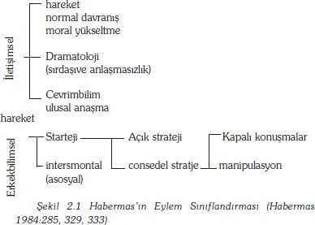
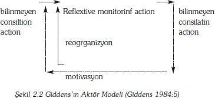

Bu bölüm, Sevda Mutlu tarafından çevrilmiştir.
Bir kimseye niçin bir şeyler yaptığını, niçin belirli bir toplumsal davranışın parçasına katıldığını sorarsanız, genellikle bir neden göstererek yanıtlar. Bir siyasetçi iktidara gelmek için çalışır, çünkü halka hizmet etmek istiyordur; bir adam evlenir çünkü aşıktır; bir öğrenci çok çalışmak durumdadır, çünkü daha iyi bir derece ya da not almak istiyordur. Bu tür nedenler, bireyin düşüncesini, yani, insanların kendilerine hedefler koymalarını ve bu hedeflere göre amaçlı bir şekilde davranmalarını, derinden etkiler. Hedeflere göre eylemde bulunurlarken, davranışlarını anlamlandırırlar. Davranışları, kendilerine anlamlı gelir ve davranışlarına verdikleri değerler ve nedenler diğer insanlara dahi anlamlı gelebilir.
Bu çoğunlukla tartışmaya yol açmayan bir konudur. İnsanlar gündelik yaşamlarında alışılmış bir şekilde yaşarlar ve tam bu noktada, tarihçiler, siyaset bilimciler ve diğerlerinin yanında sosyologlar da insanların eylemlerde bulunduklarını kabul ederler. (Dahası, politika ve tarih bilimleri gibi gündelik yaşamda da, insanların kendi davranışlarına verdikleri değer ve nedenler tamamıyla geçerli açıklamalar olarak kabul edilir, kişinin yalan söylemediği varsayılır.) Yine de (pek çok ekonomist ve diğerleri gibi) sosyologlara göre, bu konu tamamıyla sorunludur (problematiktir). Pek çok sosyolog öznel anlamların doğru olabileceğini kabul ederken, insanların kendi davranışlarına verdikleri değerler ve nedenler, sadece bazı sosyoloji kuramcılarını ilgilendirmektedir. Bu grup içerisinde, daha küçük bir sosyolog grubu, bu açıklamaları ve nedenleri, kuramın geçerli ve gerekli parçaları olarak kabul etmektedir.
Bir grup anlam, neden ve niyete göre, eylemde bulunma sürecine, birey oluş süreci (agency) olarak bilinmektedir. Birey oluş süreci yapılan vurgu, bireylerin (individuals) toplumsal dünyanın ürünleri ya da hatta kurbanları olmadığını, daha çok, kendi dünyalarını yaratan, davranan, hisseden, düşünen özneler olduklarını, dile getirmektedir. Bireyler bu eylemlerini hem amaçlı hem de amaçsız bir şekilde yapabilirler, ancak, bütün bunlardan ziyade kendi ve diğerlerinin davranışına anlam vererek eylemde bulunurlar. Büyük ölçekli toplumsal düzenlemeler, anlamların müzakere edildiği, bir yarış içine girdiği ve en azından bir dereceye kadar paylaşıldığı karmaşık etkileşim süreçleri vasıtasıyla ortaya çıkmaktadır.
Kuramına bu bölümün sonuna doğru ayrıntılarıyla değinilecek olan Giddens, birey'e daha biçimsel bir açıklama getirmektedir. Bireyi (agency) şöyle tanımlıyor; "süre giden dünya olaylarında, fiziki varlığın, hakiki ya da tasarımlanmış nedensel müdahalelerinin akması" (1976:75). Birey, insanların toplumsal dünyalarını bilinçli bir şekilde yapılandırmalarını ve pratik etkinliklerini içerir. Yine de, bu kavram, bireyler dahil oldukları "müdahaleler" konusunda seçim yapma haklarına sahip olduklarından, toplumsal dünyanın geleceğinin belirlenemeyeceğini söyler. Giddens (1976:77) amaç ve niyet gözden geçirilebilse, böyle amaçların gerçekleştirilemeyebileceğini ve müdahalelerin pek çok niyet edilmeyen sonuçlara sahip olduğunu vurgulamaktadır.
Kısaca, birey kuramlarının başlıca özellikleri aşağıda verilmiştir:
1. Bu kuramlar, insanları, akıllı ve yaratıcı özneler olarak, özellikle de her şeyden öte, toplumsal yaşamlarını etkileyen, koşulları kontrol eden özneler olarak görmektedirler.
2. İnsanlar davranışlarına anlamlar yüklerler. Sosyoloğun önemli bir görevi, bu gibi anlamları anlamak ve çözmektir. Bundan dolayı, sosyoloji, eylemi araştıran yorumcu (hermeneutik) disiplin olmalıdır.
3. İnsan eylemi güdülere dayanır. İnsan eylemlerini, zaman içinde amaçlarına erişebilmek için zihinsel olaraki tasarlayarak anlamlandırırlar. Güdüler, sosyologlar açısından, davranışların sözlü olarak anlaşılması ve nedenlerinin anlaşılması bakımından kabul edilebilir.
4. Toplumsal dünyanın özü, insan etkileşimidir: Yani, özneler sözcükleri jestleri ve diğer sembolleri kullanarak özneler aralarında anlamsal uzlaşmalar sağlanmaktadırlar.
5. İnsan eylemlerinde, düzenli kalıplar görülebilir, çünkü, anlam her zaman için yeniden yeniden müzakere ediliyor değildir. Bu belli kalıplar, toplumsal hayatın, alışıldık, büyük ölçekli düzenlemelerini kurmaktadır.
6. Yine de, birey kuramlarında vurgu, sürekli varolan geniş ölçekli yapısal düzenlemelerden ziyade, belli bireyler ya da birey tipleri açısından, şimdiki ve günlük toplumsal deneyimler üzerinedir.
Bu bölüm, bu ilkelerin hepsini ya da bir çoğunu vurgulayan kuramlar üzerine odaklanmaktadır. Birinci kısımda, anlam yorumuna vurgu yapan Weber'in düşünceleri gözden geçirilmiştir ve etkileşimin biçimsel özelliklerini inceleyen Simmel üzerinde durulmuştur. Simmelci sosyolojiden sonra, Simmelci sosyolojinin izini süren sembolik etkileşimci gelenek 20.yüzyılın ilk yarısında Amerika'da ortaya çıkmıştı. Weberci yorumcu (hermeneutic) sosyoloji, modern anlatımını, anlamların anti-bilimsel analizi olarak bilinen etnometodolojiye belirli-kapsamlı bir hareket noktası sağlayan Schültz'un önerdiği fenomenolojik toplumsal bilim felsefesinde bulur. Bu modern gelişmeler, radikal bir birey kuramı oluştururlar ki, büyük ölçekli toplumsal düzenlemeleri (örneğin, toplumsal yapılar) hiçbir gücü ve etkisi yokmuş gibi parantez içerisine alınırlar. Buna karşılık, Weber'in birey anlayışı, toplumsal yapıların varoluşunun bir açıklaması olarak geliştirilebilir. Bu tür genişletilmiş birey anlayışı, Parsons, Habermas ve Giddens gibi üç kuramcının çalışmalarında görülebilir.
Temel varsayımlar/düşünceler
Birey konusunda sosyolojik tartışmaların/düşüncelerin kökenleri geç 19. yüzyıl Alman entelektüel yaşamında ortaya çıkan tartışmalardan kaynaklanmaktadır. Marx'ın maddeci düşünceleri, tarihin her bir döneminin, gerçekten biricik ve esas bir ruh ya da bir dizi idealar/fikirler aracılığı ile anlaşılabileceğini kabul eden, büyük filozof Hegel tarafından inşa edilen idealist bir geleneğe meydan okumaktaydı. Dönemin tarih yazıcılığı, zamanın hakim olan bu anlayışıyla, insan bilimlerinin doğa bilimlerinden ayrıldığını kabul etmektedir. Bu iki büyük düşünür, iki alanı da yetersiz bulmaktadırlar çünkü, onlara göre, insan özgürlüğünü ve yaratıcılığını inkar etmektedirler. Bu iki düşünürü de ele alacağız; Weber ve Simmel'i kendilerini, maddecilik ve idealizm arasında bir yerlere yerleştirmek istemektedirler ve onlara göre, toplum ne ekonomik yapılardan ne de soyut/ruhsal yapılardan oluşmaktadır, daha ziyade, insan niyetlerinden/bilinçlerinden meydana gelmektedir.
Weber: her şey birine yönelik bir şey demektir
Kuramsal birey iddiaları için başlıca klasik kaynak, Weber'in toplumsal eylemin analizi ve insan eylemini ayrıntılarıyla inceleyen ve anlaşılır kılan yöntemdir. Weber'in birbirleriyle bağlantılı üç anahtar tanımlaması vardır. Birincisi, sosyolojiyi "toplumsal eylemin yorumlayıcı anlamasıyla, eylemin sürecinin ve sonuçlarının nedensel açıklamalarıyla" (1978:4) ilgilenen bir alan olarak tanımlamaktadır. Burada, Weber yorumlayıcı sosyolojiyi öneriyor; ki bu da anlamları anlamaya çalışmaktır. Birey kuramını, diğer sosyolojik kuramlarından farklı yapan merkezi iddiası, bir olayın nedenlerinin, katılımcılar tarafından, bu olaya yüklenen anlamlar aracılığı ile keşfedilebileceğini ileri sürmesidir.
Başka bir önemli yönü, sosyolojinin konu alanının, toplumsal eylem olduğunu kabul etmesidir- birey kuramları, çoğunlukla toplumsal eylem kuramları olarak tanımlanır. Eylem, "eyleyen bireyin, kendi davranışına öznel bir anlam yüklediği"nde meydana gelir (1978:4). Bu nedenle, sosyolojinin konu alanı birey tarafından tanımlanır. Buna ilaveten, 'eylem, öznel anlamlandırmanın, diğer insanların davranışlarını hesaba kattığı ve o yönde kendini yönlendirdiği sürece, "toplumsal" olacaktır' (1978:4). Bu nedenle, eylemin toplumsal olup olmadığı, gözlemciden ziyade, aktörlerin zihninde oluşmaktadır. Eylemin, toplumsal olabilmesi için diğer insanlara yönlendirilmiş olması zorunlu değildir ve gerçekten de kendi başına durabilir sadece diğerlerinin eylemlerini hesaba katmak zorundadır.
|
Max Weber (1864-1920) |
| Weber, yaygın olarak bir çok kuruculuklarda bulunan birisi, daha çok da sosyolojinin kurucusu, olarak kabul edilir. Hukuk, yönetim, siyasi ilişkiler, ekonomi, din gibi bir çok konuyu sosyoloji disiplininin gündemine getirmiştir. Şaşırtıcı bir şekilde, hayattayken yayınlanan tek çalışması, Proteston Ahlakı ve Kapitalizmin Ruhu (1905). Denemeleri ve diğer yazıları, 1922'de ölümünden sonra toplu bir şekilde, Ekonomi ve Toplum adı ile yayınlandı. Yazılarına, tüccar, bürokrat ve siyasetçi babası ile kendini her türlü dünyevi işlerden soyutlamış dinci annesine duyduğu bağlılık yansımaktadır. Maalesef, en iyi yazıları, 1897'de babasının ölümü ile başlayan ve daha sonra sürekli olarak devam eden zihinsel rahatsızlık yaşadığı döneminde ortaya çıkmıştır. Yazılarını, bütün yaşamı boyunca bir yandan Hegelci İdealizm ve diğer yandan Marksist Maddecilik ile tartışmasından oluşmaktadır. Weber bir kurucu akademisyendir, Munich, Heildeberg ve Freiburg üniversitelerinde Profesör olarak görev almıştır. 1918 Versailles Barış Görüşmesinde Almanya'yı temsil etmiş ve I. Dünya Savaşından sonra, Almanya'da demokrasi ve cumhuriyetin kurulması için "Weimar Anayasası"nın taslağını hazırlamıştır. |
|
Kaynak: Penguen Sosyoloji Sözlüğü (1984: s.v. Weber, Max); Beilharz (1991:224-30); Ritzer (1992:112-13). |
Açıktır ki, anlam Weber'in çalışmalarında, merkezi bir konuma sahipti ve bu kavrama çok geniş bir yer ayırmıştı. Sosyologların keşfedebilecekleri iki tür anlam olduğunu söyleyerek işe başlamaktadır: birincisi, aktörlerin kendi yaşadıkları deneyimlerde verdikleri anlamlar, ikincisi, bir gözlemcinin, kurgusal bir aktöre atfettiği bildiğimiz türden anlam. İkinci türde, insanlar tipik/bilinen anlamları kavrarlar. Örneğin, bir posta kutusunun başındaki postacının durumunda olduğu gibi; eylemde bulunan kişi, herhangi belli bir kişiyi hedef olarak seçmiş değildir.
Belli bir eylemin parçalarına yüklenen anlamlar sosyolog açısından oldukça anlaşılabilirdir ve bunların yorumları, eylem rasyonel olduğunda, hemen hemen kesindir. Rasyonel eylem, bir kişinin bir durumun gerçeklerine göre belli amaçların gerçekleşmesi için uygun araçlar seçerek, bu amaçlara ulaşmaya çalışması söz konusu olduğunda ortaya çıkar (1978:5). Sosyologlar rasyonel olmayan ve duygusal eylemi açıklamada zorluklar çekmektedirler. Bundan dolayı Weber, kurgusal bir rasyonel eylem akışının yaratılmasını ve daha sonra bunun ile gerçek eylemin kıyaslanmasını önermektedir.
Rasyonel ve diğer eylem tipleri arasında ayrım yaparken Weber, ortaya çıkabilecek toplumsal eylem türlerinin bir taslağını oluşturmaktadır. Taslak, dört toplumsal eylem tipini tanımlamaktadır:
• Araçsal Olarak Rasyonel Eylem: bireylerin,hesaplı, kısa-dönemli ve kendi çıkarlarına yönlendirilmiş eylemleri bu şekildedir. Bu eylemlere örnek olarak, borsada spekülatif amaçlı yatırım yapma ya da sadece cinsel haz elde edebilmek için karşı cinse yaklaşmayı verebiliriz.
• Değer Rasyonel Eylem: bilinçli inanç, adalet, güzellik, doğruluk ya da Tanrı inancı gibi değerler tarafından belirlenen eylemlerdir. Weber, bu tip eylemin göreli olarak daha nadir/az olduğunu kabul etmektedir. Yine de, örnek olarak, az bir maaşla öğretmen olarak çalışmaya, eğitimin değerlerine olan inancından ve hayır sever olduğundan razı olan, kişinin durumu verilebilir.
• Duygusal Eylem; bunlar hisler, ihtiraslar, psikolojik ihtiyaçlar ya da duygusal durumlar tarafından belirlenen eylemlerdir. Fiziksel saldırı, cinsel davranışlar ve sinir krizleri bu eylem tipinin örneğini oluştururlar.
• Geleneksel Eylem; bunlar sadece daima belirli bir şekilde yapılmış olduğundan dolayı yapıldığından, alışkanlık haline gelen eylemlerdir. Evlilik merasiminde belirli bir kelimelerin dile getirilmesi ya da yolun belirli bir yönünde araba kullanma davranışı, örnek olabilir. İnsan davranışlarının bir çoğu, bu alışkanlık haline gelmiş eylem kategorisi içerisine girmektedir.
Bu eylem tiplerinin hepsi, yorumcunun anlayışını eşit oranda etkilemez. Hatırlanacağı gibi, Weber'in sosyoloji tanımlaması, insan eyleminin "yorumlayıcı anlama"sını (verstehen) içeriyordu. Bu anlamanın, başarıya ulaşmasının mümkün iki yolu vardır. Birincisi, 'dolaysız gözleme dayalı anlama' (aktuelles Verstehen) bu tür anlama, normal olarak niçin yaptığını bilmememize rağmen, bir kişinin ne yaptığı hemen kavradığımız günlük hayattaki direkt anlama türüdür. Örneğin; posta kutusunun başındaki postacının ne yaptığını biliriz.
Yine de bu anlama, sınırlı bir anlama biçimidir. Yeterli bir sosyoloji, bireylerin güdülerinin açığa vurulduğu, açıklayıcı anlamayı (erklärendes Verstehen) araştırmalıdır: 'Bir güdü, bireyin kendi kendine ya da gözlemciye, uygun eylem zemini oluşturacakmış gibi görünen karmaşık öznel anlamlardır' (1978:11). Hem geleneksel eylem hem de duygusal eylem, anlamlı olarak yönlendirilmiş görünen eylemin kıyısında durmaktadırlar. Açıklayıcı anlamaya değil, dolaysız anlamaya tabi kılınmışlardır. Değer rasyonel eylem nadir olduğundan, sosyologların temel ilgi alanını araçsal rasyonel eylem oluşturmalıdır.
Güdüyü rasyonel olarak anlamak, sosyologların eylemi daha anlaşılabilir ve daha geniş bir bağlam içerisine yerleştirebildiklerinde başarılabilir. Bu nedenle, normal olarak postacının güdüsünü, bir sanayi toplumunda insanın geçimini sağlayabilmesi amacıyla imkan elde etme ve maaş elde etme mücadelesi olarak anlayabiliriz. Sorun şudur ki, bu yargımızda, biz doğru olamayabiliriz (ki Weber bunu çok hızlı kavramıştı)- postacı anlayışla karşılanacağı gibi, açık hava işlerinden hoşlanan, bağımsızlığına düşkün biri olabilir ve faydalı bir şeyler yapmak istemiş olabilir ve de bütün gelirini hayır kurumlarına bağışlamayı düşünebilir. Mümkün olduğu sürece sosyologlar yorumlarını, olayların gerçek akışı ile kıyaslamak durumundadırlar. Yani, burada geniş bir şekilde kullanılan örnek düşünülecek olursa, bir grup postacı izlenmeli ve maaşlarıyla ne yaptıklarını gözlemeli ve anlamaya çalışılmalıdır. Açıkça Weber'in kabul ettiği gibi, bu yalnızca çok ender bir durumda mümkün olabilir. Bunun yerine, sosyologlar eğer mümkünse çok sayıdaki hem çağdaş hem tarihsel toplumsal süreçlerin karşılaştırılmasına dayanmalıdırlar. Bu başarısız olursa, güven olmaz, zihinsel deneyimlere sığınmak zorunda kalırlar.
Bu noktada, Weber anlam yeterliliği ve nedensel yeterlilik ölçütlerini birbirinden ayırmaktadır. Bir güdünün tespit edilmesi bir toplumsal süreç kuramının anlam yeterliliği için kafidir. Anlam yeterliliği, bir eylemin öğeleri arasındaki ilişki, genellikle düşündüğümüz ve davrandığımız biçime göre, "tipik" bir anlamın karmaşası olarak kabul edildiğinde, kurulmuş olur. Nedensel yeterlilik ise, anlam yeterliliğinin tersine, bir eylemin öğeleri arasındaki ilişki sık sık, ya da tercihen değişmez bir şekilde ortaya çıktığı, gösterildiği zaman kurulmuş olur. Doğru bir nedensel yorum (iki kelimenin bileşenine dikkat ediniz) her iki ölçüt bir araya geldiğinde yani istatiksel düzenli ve gizli olmayan eylemler ve onların kuruluşunun ardında yatan güdüler arasında bir ilişki olduğunda meydana gelir.
Bütün bunlarla, Weber gündelik yaşamda kurulan ve gözlenen anlamdan ayrı olağandışı bir sosyolojik metodolojiyi kurma iddiasındadır. Günlük hayatta, insanlar, sadece pratik açıdan yeterli olma durumda olan, bütün toplumsal eylem türlerinin gerçek anlamlarını direkt olarak anlama işinin içindedirler; fakat sosyoloji alanında, hem nedensel hem de anlamsal yeterliğine sahip rasyonel eylemlere yönelik güdülerin açıklayıcı anlamlarını da anlamak gerekir. Bu görüşleri ile çağdaşı olan Simmel'in öznel olarak niyet edilen ve nesnel olarak geçerli anlamlar arasında yaptığı ayrımı başarısız olmakla suçlayarak karşı çıkar (1978:4). Göreceğimiz gibi, anlamları elde var sayıyor yine de etkileşimi önemle vurgulayarak birey kuramlarına önemli bir katkıda bulunuyor.
Simmel: izlenimci kuram
Simmel'e göre, toplumsal süreçler, temel olarak psikolojik süreçlerdir. Toplumun varoluşunun ön koşulu, bireylerin birbirlerine bağlanmaları ile oluşan, bireyler tarafından meydana getirilen bilinçtir. Weber'i hatırlatan bir pasajda, Simmel: 'elle dokunularak hissedilebilecek tek varolan şey, gerçekten sadece insanlardır ve onların konumları ve etkinlikleridir: bundan dolayı görev sadece onları anlayabilmektir buna karşın, (ideal bir sentez aracılığıyla meydana çıkan ve asla kavranamayan) toplumun özü, gerçekliğin araştırılmasına yönlendirilmiş düşünce nesnesini oluşturmamalıdır (Simmel iç. Frisby 1981:40). Toplumsal süreçlerin gerçekliği Simell'in 'Toplumlaşma' ('Sociation') olarak adlandırdığı şey, zihinde yerleşiktir öyle ki, toplum bilişin bir uyumu, her bir bireyin ortak bilgiler kümesinin bir parçası olduğu gerçeğinin ürünüdür. Simmel (1959a:342-56) bu öneri için üç ilke sunmaktadır:
• Diğer insanların psikolojik halleri hakkındaki sahip olduğumuz bilgi kaçınılmaz olarak eksiktir. Bundan dolayı, soyutlanan yaygın bir grup karakterlere göre diğerleri hakkında düşünmeye zorlanırız. Örneğin, bütün öğretmenler ve bütün bürokratların belirli bir durumda benzer/aynı olduklarını varsaymalıyız. Bunun yanında bütün bireylerin tipik durumlarda birbirleriyle ilişkili olduklarını da varsaymalıyız. Bu nedenle her birey toplumu tek biçimli olarak tasarlar.
• Birey başkalarını sadece tipik olarak (hepimizce bilinen bir şekilde, çn.) düşünmez benzer şekilde diğerleri tarafından da kendisine aynı şekilde davranılır. Belirli koşullarda bu tür algılar, bireylerin önde gelen pozisyon/konumlarından ayrı olarak nesneye, tüketicilere ve anonim üreticilere indirgendiği parasallaştırılan kapitalist kültürün saf nesnelliğin düzlemine ulaşır.
• Bireysel yetenekler ve toplumda işgal edilen yer arasında bir uyum vardır. Bundan dolayı, toplumsal eşitsizlik, bireysel farklılıkların doğal yansımasıdır.[5]
|
George Simmel (1858-1918) |
| Berlin kentinde doğdu, Simmel din olarak Hıristiyan ancak etnisite olarak Sephardic Yahudi idi. Yahudi olması, Entelektüel ünden hoşlanmasına rağmen, niçin yalnızca marjinal akademik kariyer için çalıştığını açıklamaktadır. Ya onursal görevleri ya da çok az para karşılığındaki görevleri kabul etmiştir. En sonunda Almanya Alsace'de 1914'de Strasbourg Üniversitesi'nde Felsefe Başkanlığını almıştır. Ancak bu görevde de akademik verimsizlik içerisindeydi. Sosyolog olarak Simmel oldukça çelişkili bir durumdaydı, çünkü ancak kariyerinin ortalarında sosyoloji yazmayı arzulamıştır. Yoksa, filozof ya da psikolog olarak biliniyordu. En iyi bilinen kitabı "Sosyoloji ve Paranın Felsefesi"dir. Toplumun özünü analiz etmekten çok, toplumsal yaşamın formlarını pek çok çeşitli olası kısımlara ayırmak amacını güden bir 'Formal Sosyoloji'nin kurucusudur. |
|
Kaynak:Penguen Sosyoloji Sözlüğü (1984:s.v. Simmel, George); Beilharz (1991:202-8); Ritzer (1992:158-9) |
Buradan Simmel, toplumun kökenlerinin buğday başakları gibi büyüyen toplum katılımcılarının zihninde yattığı fikrine yönelik bir zemin hazırlamaktadır. Şimdi bu oluşlar tarafından meydana gelen süreçleri düşünelim. Toplum, bireylerin zihninde içeriliyorsa, dışsal, nesnel bir birlik olamaz, ancak sadece onu meydana getiren parçaların bir toplamı olabilir. Bu parçalar birbirine bağlı ayrılmaz iki öğeden oluşan bireylerin eylemidir, bu öğeler: bir öz/gerçek anlam, yani 'bir ilgi, bir amaç ya da bir güdü'; ve 'bireyler arasında etkileşim tarzı, formu ya da toplumsal gerçekliğin özüne ulaşma biçimi' ( 1959b:315). Yaşamı sürdürme güdüleri (örneğin: açlık, sevgi, dinsellik, teknoloji, zeka) yalnız bırakılan bireyleri etkileşim ilişkileri içerisinde dönüştürünceye kadar tam anlamıyla toplumsal değildirler.
Simmel, sosyolojinin tekrarlanabilen ve ifade edilen çeşitli gerçek anlamlar aracılığıyla davranışın evrensel kalıpları olarak tanımlanabilen etkileşimin bu formları üzerine yoğunlaşması gerektiğini ısrarla savunmaktadır. Simmelci sosyoloji sıklıkla 'Formal Sosyoloji' olarak tanımlanmasına rağmen, toplumsal formların beklenilen sistematik sınıflandırmasını vermemektedir. Gerçekten de onun sosyolojisi, parçalayıcı ya da izlenimci bir sosyoloji olarak bilinmektedir, hatta zengin kavrayışlar içermesine rağmen bir enstantaneler (snaphots) dizisi olarak (örneğin: Frisby 1981) da tanımlanmaktadır. Yine de Levine (1959), Simmel'in önerebileceğini düşündüğü toplumsal formların bir sınıflandırmasını aşağıdaki gibi yapmıştı:
• Etkileşim sürecinin formları, örneğin, modanın sosyal süreçleri içerisinde farklılık ve taklit;
• Toplumsal tipler, örneğin, aristokrasi;
• Gelişimsel kalıplar, örneğin, bireyselliğin gelişmesi ve gruplar arasındaki ilişki.
Weber ve Simmel 'den hiç şüphe yok ki, Weber sosyoloji kuramın gelişmesinde çok daha etkili olmuştur. Çünkü Weber burjuvazi ve kapitalizm gibi büyük ölçekli insan yapılarındaki anlam karmaşalarına işaret etmekteydi. Simmel'in yaptığı gibi yapmıyordu, bu gibi yapıları yalnız aktörlerle ilgili olan psikolojik süreçlere indirgeme konusunda ısrar etti. Yapılar aktörlerin analizlerinden bağımsız olarak analiz edilebilirler. Bunun anlamı, Weber sadece eylem kuramlarında etkili değil, aynı zamanda gerçeklerden bağımsız olarak toplumsal yapıları araştırmayı kendisine konu edinen kuramlar üzerinde de etkili olmuştur. Diğer yandan Simmel'in etkisi, zayıf, geçici ve dolaylı olmuştur. Yine de, onun kuramı sadece eylem üzerine kararlı bir şekilde odaklanan toplumsal psikolojik kuramları dikkate alınabilir bir şekilde önemli ölçüde alttan desteklemiştir. Bunlardan biri, 20.yüzyılın ilk yarısında Amerikan Sosyolojisini etkili ve baskın bir şekilde yönlendiren ve önemli bir kuram olan sembolik etkileşimciliktir ve şu anda da hareket adresidir.
Sembolik Etkileşimcilik:
Benlik Temelinde (self-made) Toplum
Simmel'in etkisi öğrencilerinden biri olan Park ile birlikte Amerikan Sosyolojine taşınmıştır. Park, Chicago kent sosyolojisi olarak bilinen okulun kurucusudur. Simmel'in kenti düzensizleştiren toplumsal etkiler konusunda yapılan araştırmalara dayanarak belirsiz ve tehdit edici bir toplumsal çevre olarak tanımlayan görüşleri izlenmiştir. Bu çalışmalar, esas olarak, belirli etkileşimin formlarının betimleyici açıklamalarıydı, katılımcılarca anlam-bahşetme (meaning-endowment) konusundaki geçerli hale sokulmamış ancak iyi düşünülmüş raporları da içermekteydiler. Genç grupları, yoksulluğu, ahlak bozukluğunu ve yeni göçmenlerin deneyimlerini inceleyen çalışmalardır bunlar. Eğer varsa çok azı Weber'in nedensel uygunluk ölçütünü karşılayabiliyordu. Daha önemlisi, Park Chicago Üniversitesinde iken psikolog Mead ile bağlantı kurar ve şüphesiz Simmel'in çalışmalarını ona göstermiştir. (bkz. Rock 1979:44-8). Mead'ın Simmel yorumları, sembolik etkileşimcilik olarak adlandırılan kuramsal bir geleneğin merkezi olmuştur. Bu bakış açısından toplum, aslında zihni süreçler anlamına gelen dil ve jestlerin (sembol) alınıp-verilmesi ile inşa edilir.
Mead: Sağduyu (Common-Sensing)
Mead'ın olağanüstü kavrayışı, insan toplumlarını hayvan (diğer) toplumlarından ayıran en önemli öğenin dil olduğunu söylemesidir. Hayvanlar direkt uyarıcı olarak jest davranışlarının anlamları aracılığıyla konuşabilirler ancak bu iletişimi oluşturmaz. Daha doğrusu davranış tutalım ki, bir erkek maymunun göğsünü dövmesi saldırgan davranışına bir işarettir. Başka bir maymunun bu uyarıcıya bulunduğu yerden daha uzağa giderek yanıt verebilir ancak anlayamaz ya da davranışın anlamını ve güdüsünü yorumlayamaz.
Mead, buradan bir jest hali takınma ifadelerindeki dilsel gelişmede bir sonraki ara sahneyi göstermektedir. Böylece, insan toplumu ortaya çıkarken, sese ve anlama dayanarak farklılaşan işaret edici sözcükler kullanılmaya başlar. 'İmdat' ya da 'geri çekil' gibi kelimeler hâlâ insan dilinde yaşamaktadır ve Weber'in duygusal eylem olarak isimlendirdiği şeyin içerisinde en açık şekilde görünmektedir, davranış yüksek oranda duygusal anlamlar içerir. Ancak, Mead hâlâ bu işaret veren dili iletişim olarak tanımlamamaktadır.
|
George Herbert Mead (1863-1931) |
| Mead, Amerika Massachusetts'de Protestan Papaz ailesinde doğdu. Harvard'da ve Leipzing Berlin'de de eğitim gördü ve burada Psikolog Wilhelm Wundt'un etkisi altında kaldı. Doktora derecesi almamasına rağmen, 1892'lerde Chicago Üniversitesinde toplumsal psikoloji öğrenmiştir. Yaşamında kısa bir zaman içerisinde başarı kazanan Mead asla bir kitap yayınlamamıştır. Yine de çok etkileyiciydi ve konferansları bir araya getirilerek ölümünden sonra yayınlandı. Sembolik etkileşimcilik olarak adlandırılan sosyolojinin toplumsal psikoloji branşının çatısını kurmuştur. |
|
Kaynaklar: Penguen sosyoloji sözlüğü (1984:s.v. Mead, G.H.); Coser (1977:333-55); Ritzer (1992:332). |
İletişim, ancak grupların her biri sadece kendi davranışlarına verdikleri anlamı değil aynı zamanda diğerlerinin verdikleri anlamı da araştırıp anlamaya çalıştıklarında gerçekleşir. Her kişi, kendisini diğer kişilerin konum ya da yerlerine koyabilir: bu tür anlam paylaşımı dilin sözdizimsel farklılık ya da öneriler geliştirdiği noktasında gerçekleşir (Habermas, 1987:5) ve bundan dolayı tamamen sembolik bir karakter/özellik taşır. Paylaşılan anlam karmaşasına soyutlanmış referanslar teşkil eder. Bundan dolayı örneğin, evliliğe yol gösteren danışmanlar, eşlerin duygusal jestlerinin arkasında yatanı ve onların kendi davranışları için her birinin verdiği nedenleri ve yapıp ettiklerinden eşlerden diğerinin davranışının anlamı hakkındaki beyanat/ifadelerini araştırmaya cesaretlendirirler. Danışmanlar diğerlerinin kendi kendine anlayışı ve kişisel anlayışı arasında bir uyuşma sağlama arayışındadırlar.
Bu tartışma içerisinde Habermas (1987:11-12), dil ve iletişimin insanın gelişimindeki ilişkisi bakımından iki fonksiyonel eğilim olarak tanımlamaktadır. Birincisi, iletişim insanoğluna gerçekten diğerlerinin yerine geçmeden diğerlerinin zihninde kendilerini tasavvur ederek, belli bir eylemin gidişatının sonuçlarını görebilecek, düşünebilecek ve boşluk elde edebilecekleri net avantajlar sunmaktadır. Böylece, kendi davranışlarını bir takım olumlu sonuçlara yönlendirebilirler. İkincisi, insanın diğerleri ile karmaşık bir anlamsal ilişki içerisine girmiş olması, diğerlerinin beklentilerine hızla uyum sağlamaları için baskı unsurudur. Bunun için, insan toplumu bir iletişim toplumu olarak gelişmiştir.
Ortak anlayış içerisinde dili kullanarak toplum konusuna önemli bir vurgu yapan bu perspektif, sembolik etkileşimciliğin üç ünlü dayanak ifadesini Blumer (1969:2) özetlemektedir:
• İnsanlar şeylere yönelik olarak, o şeylerin kendilerine ifade ettikleri anlamlar temelinde davranırlar (buradaki şeyler kavramı ile diğer insanları, toplumsal kurumları, soyut düşünce, değerleri ve fiziksel nesneleri kast etmektedir);
• Bu şeylerin anlamı, insanların diğer insanlar ile içine girdikleri toplumsal etkileşiminden doğarlar ya da çıkarılırlar;
• Bu anlamlar, karşı karşıya geldikleri şeylerle ilgilenen kişinin kullandığı bir yorum süreciyle ele alınır ve dönüştürülür ve ele geçirilir.
Daha bütün ve geliştirilmiş bir Sembolik etkileşimcilik özeti Meltzer vd., tarafından sunulmaktadır:
Bir uyarıcının insan davranışları üzerindeki etkisi, insan davranışlarının ortaya çıktığı sembolik anlamalar ortamında şekillenmektedir. Bu anlamlar, bir toplumda bireylerin paylaştıkları etkileşimden ortaya çıkmaktadır. Toplum, insani davranışlara toplumsal sınırlar koymada aktif rol oynayan insanların kendi davranışlarının dışında kurulmaktadır.
Bundan dolayı, insan davranışı önceden tayin edilmiş bir sona doğru düzgün doğrusal bir açımlama değildir ancak insanın fiziksel ve toplumsal çevrelerini 'anlamlandırma' çabalarıyla faal bir inşa sürecidir. Bu 'anlamlandırma' süreci düşünce şeklinde içselleştirilmektedir: çünkü düşünme, bireyler arası (inter-indivudual) etkileşim özellikleri de taşıyan, bireysel (intra-individual) sorun-çözme sürecidir. O halde, düşünme sürecinde, kişinin kendi kendisi ile de bir etkileşim söz konusudur. İnsan davranışını bütünüyle anlamaya kalkışmak sadece apaçık ortada olan davranışları değil, etkinliklerin sözü edilen bu örtülü boyutunun da anlaşılmasını içermelidir (1975 vii).
(Mead )Toplumsallaşma Üzerine: Oyun Oynama
Sembolik etkileşimciliği yapısal sosyolojilerden ayıran şey, insanı yaratıcı bir birey olarak ele alması iken davranışçı toplumsal bilimlerden ayıran şey ise zihinsel süreçler üzerine yaptığı vurgudur. Bu içsel ya da psikolojik süreçlerin sorunlar içerdikleri düşünüldüğünden, şimdi Mead'ın bu süreçlere yönelik analizini incelemeye yeniden dönebiliriz (1934:164-226).
Mead'ın sembolik etkileşiminde temel kavram benliktir (self). Rock, (1979:102) benliğin yalnızca 'gerçek' toplumsal nesne olarak ele alınabileceğini ve bütün diğerlerinin ikinci dereceden öneme sahip olduğunu iddia etmektedir. Benlik dil tarafından yapılandırılır. İnsan 'ben' ve 'beni/bana' kavramlarının her ikisini benliği tanımlamak için kullanır ve bunlar benliğin kavram ya da unsurlarını temsil eder. 'Ben' (I), düşünen ve davranan öznelerdir, yaratıcı ve başlatıcıdır, gerçekten kendini merkeze koyan alandır. 'Beni/bana' (me), hem gerçek hem de hayal edilen, diğer zaman ve mekanlarda ve diğerlerinin statülerinde benliğin düşüncesini ben'e yansıtan nesnel benliktir. Daha önemlisi, bireyin benlik duygusunun başkalarının aynalarına tutulması ve yansıması -Cooley'in ifadesiyle 'ayna benlik', (looking-glass self) dır. Bundan dolayı, toplum 'Beni/Bana' aracılığıyla bireyler içerisinde akar ve eş zamanlı olarak 'Ben' ile inşa edilir ve yapılandırılır. Etkileşime önemli bir anlam veren sembolik etkileşimci tartışma, toplumun beklentilerinin bireysel isteklerle uzlaştırıldığı 'ben' ve 'beni/bana' arasındaki içsel konuşmadır. Bütün bunların ötesinde bu bilinçli bir psikolojik süreçtir.
Tekrar Mead'ın analizinde ortaya çıkan benliğe döndüğümüzde, (1937:150-64) gelişmiş ve tamamlanmış bir benlik, bir kişinin sembollere verdiği anlam ile diğerlerinin verdiği anlamının aynı olduğundan göreli olarak emindir- yani gelişmiş bir benlik hem toplumu içerir hem de toplumun yaratıcısıdır. Birinci görünüş, böyle bir yeteneğin gelişmesi, çocukların davranış kalıplarında bulunabilir. Oyunun ilk evrelerinde polis memuru, anne, sürücü gibi farklı rolleri takındıkları organize olmayan taklitleri içerir. Böyle yaparak çocuklar diğerlerinin kendilerine uygun gördükleri rollere, benzer roller biçeler, böylece toplumsallık (sosyability) kurulmaya başlar.
Organize edilmiş olan oyunun ikinci sahnesi çok daha karmaşıktır. Burada, örneğin, çay partileri ya da futbol oyununda, çocuk oyun içindeki bütün diğerlerinin rolünün almaya hazırlanmalıdır (i.e. kendi kendini diğerlerinin yerine koyma) ve gerçekten onlarla arasındaki ilişkiyi bilmelidir. Bu nedenle, bir futbol oyununda, yetenekli bir şekilde oynayabilmek için hem kendinin hem de karşıt takımın üyelerinin her birinin yapabileceği şeyin farkında olmalıdır. Roller arasındaki ilişkiler, kurallarla kurulur ve çocuklar kuralların üstesinden gelebilmek için yani toplumun nesnelliğinin yaratıcı bir şekilde kuruluşunda çok zaman ve enerji harcarlar.
Benlik, genelleştirilmiş diğerlerinin rolünü takındığında ve davranışın genel bir standardına göre etkileşimi ile diğerlerinin yönlenimlerini bütünleştirebildiğinde, gelişiminin ileri aşamasına ulaşmış olur. Artık toplum ve kişi/benlik (self) birbirinden uzak, ayrılmış görünmez ancak toplumda bireyin yansıması oluşur. Benlik kendisinin grubun bir parçası olduğunu hisseder ve bir kimsenin statüsünde nasıl davrandığını ve davranması gerektiğini bilir. Genelleştirilen ötekileri 'ben' ve 'beni/bana' arasında yaygınlaşmış diyalogun bir parçası olmaya başlar ve gerçekten benliğin büyük oranda toplumsal bütünleşmesi 'beni/bana' ile birlikte oluşur.
Son Gelişmeler: Parçalanan İletişim
Mead'den esinlenen Sembolik etkileşimcilik, II. Dünya Savaşına sürecinde Chicago Üniversitesi'nde gelişmişti. Bununla birlikte, deneysel olmayan sosyal psikoloji savaş sonrası dönemde, bilimsel davranışçı psikoloji ve sosyolojide güçlü bir kuramsal yönelim olan yapısal-fonksiyonalizm gibi ikiz tehdit ile karşılaştı. Sembolik etkileşimcilik, çeşitli okullara ayrılarak tepkisini gösterdi (örneğin, yorumcu Mead'ın toplumsal psikolojisi ve psikolojik bir bakış açısını doğrulayan Blumer'ce kurulan Chicago Okulu ve bu okula karşıt olarak davranışçı psikolojinin empristik/deneysel buyruklarını benimseyen Kuhn'un liderlik ettiği Iowa Okulu) (bölüm 3'e bakılabilir).
Meltzer vd., (1975:61-7) iki okul arasındaki farklılıkları aşağıdaki gibi özetlemektedir. Blumer'e göre, insan davranışı önceden bilinemez ve kesin değildir, bireyler yenilik yaratan yaratıcılardır. Blumer bu belirsizliği ile 'ben' ve 'beni/bana' arasındaki ilişkiyi de daha çok Freudcu hatta ele almaktadır (Bölüm 4'e bakılabilir).[6] 'Ben' duygusaldır, atılgan ve enerjiktir, tersine 'beni/bana', 'ben'i yöneten toplumu temsil eder. Belirsiz bir şekilde düşünmeden hareket eden 'ben'den ortaya çıkar. Bunun aksine Kuhn'a göre, 'Ben'in, 'Beni/Bana' tarafından içerilmesi sonucunda, insanlık aşırı-sosyalleşmiş bir karakter olarak ele alınmış olur (Bakınız Wrong 1976). Benlik, toplumsal ve tamamen içsel normlarla belirlendiğinden benliğin davranışı önceden tahmin edilebilir.
Böylece Blumer, insan eylemini, bir yapı kurma süreci olarak görür; bu süreçte birey çevresel uyarıcılar üzerine düşünüme geçer ve onlara etkide bulunup bulunmamayı, onların olanaklı sonuçlarıyla olabilecek çeşitli projelerle bağlantılı olarak düşünür. Bireyler, etkileşimi deneme ve keşif kabilinden süreçler olarak yerine getirdikleri rollerinin yapıcıları ve yaratıcıları olarak tasarlanırlar. Iowa yaklaşımının özünde uyarıcı yorumlanamaz ve düşünülemez, onlar sadece varoluş-öncesi (pre-existing) psikolojik yapılardan davranışı serbest bırakmanın (Blumer'in kullandığı terim) tetikçileri olarak vardırlar. Bireyler rol yaratmazlar ancak toplumsal yapılarca belirlenen beklentilere göre oynarlar.
Goffman: Bütün Dünyanın Bir Sahnesi
Modern sembolik etkileşimcilerin en etkilisi ve azimlisi olan kuramsız/kuram yaratmayan (non-theorizer)[7] Goffman (1959), rehberliğini sembolik etkileşimciliğin Chicago Okulundan almıştır. Goffman'a göre, birey gerçekten rol yaratıcısıdırlar, ancak derinliğine bakıldığında bireyin her ne zaman bir rol oynaması gerekse, özel performansını takınması gereklidir. Toplumsal yaşam, bütün katılımcıların bakışlarının aynı olabilmesine rağmen, performanslarında farklı kabiliyetlerin olduğu bir tiyatrodur. Bundan dolayı Goffman dramaturjik olarak tanımladığı bakış açısında ısrarlıdır. Her bir toplumsal konum, gerçek-yaşam (real-life) oyunun, gerçeğe uygun aktörler tarafından gerçeğe uygun olarak oynandığı bir tiyatro sahnesi olarak görülür. Tiyatro eseri üç parçadan oluşan sahne etkileşiminde sergilenir: rol oynayan aktörün performansı; oyundaki diğer karakterler; ve izleyiciler. Gerçek-yaşam oyununda üç parça ikiye indirilir –diğer karakterler yalnızca izleyicilerdir. Yine de, gerçek yaşamın sıradan statülerinde, aktörler kendilerine ilişkin belirli türden bir izlenim bırakacak şekilde rollerini yerine getirirler ve özellikle de bu izlenimi devam ettirecek şekilde eylemelerde bulunmalıdırlar.
|
Erving Goffman (1922-82) |
| Alberta Kanada'da doğdu. Chicago ve Toranto'da eğitim gördü. Daha sonra Berkeley ve Pennsylvania'da görev aldı. Sıklıkla sembolik etkileşimci olarak kabul edilmesine rağmen, kendi kendini bir antropolog kabul etme eğilimindedir. Gündelik yaşam özellikle de baskı yapılan ve yoksun bırakılan gündelik yaşam, onun en iyi bilinen çalışmasıdır. En iyi bilinen kitapları Gündelik Yaşamda Ben'in Sunumu (The Presentation of Self in Everyday Life), Sığınaklar (Asylmus), Damgalama (Stigma), Çerçeve Analiz (Frame Analysis)'dir. |
|
Kaynaklar: Penguen Sosyoloji Sözlüğü (1984:s.v. Goffman, Erving); Ritzer (1992:357) |
İzlenim yaratma (impression management) süreçleri Goffman'nın tartışmasının merkezinde yer almaktadır. Sembolik etkileşimciler özellikle dilsel ifadelerle ilgilidirler. Yine de, Goffman'a göre, bu biçimdeki dile getirimler, yani bir tek kişinin dile getirmi iletişimi tanımlamaya yetmez. Daha çok, bir dizi eylem belirtisini içeren beden dili, giysi, jest, mülkiyetin gösterişi, psikolojik nesnelerinin düzeni, konumu, vb. den kişinin çıkarılmasıyla ilgilenir. Kişi bunları konumunun netliğini kontrol etmek için kullanacaktır; bu nedenle, kriket ya da beyzbol oyununda beyzbol atıcılar/kriket topu atıcıları karşılarında takım oyuncuları varmış gibi, kendilerini inandırarak atış provası yaparlar yani gerçek atış yapabileceklerine ikna etmek için, atış provası yaptıklarında ancak başarılı olurlar. Dramatujik terminolojide bunlar ön ya da sahne önü konumu olarak tanımlanan, ifade edilen donanımını oluşturmaktadırlar.
Sahne önünün başlıca üç parçası vardır: tiyatro sahnesi; sahne dekorlarından, mobilya ve diğer destekleyici (örneğin bilgisayar, akademinin kitaplığı) v.b dekorlardan oluşur; görünüş, yaş, cinsiyet, ırk gibi sabit karakterleri içerir bunun yanında giysinin esnek unsurları ve aktörlerin statüleri hakkında bilgi; tavır, davranışta kişinin beklentilerinin nasıllığı konusunda belirli işaretler (örneğin, sevecen bir tavır samimi bir davranışın beklentisine işaret vermektedir).
Bir ön sahnenin varoluşu doğal olarak bir arka sahneyi de içerecektir, aktörler rahatlamak, dinlenmek ve yeni bir grup oluşturmak için arka sahneye çekilirler ve ön sahnede kendilerinden beklenilen performanslarını prova eder ve hazırlanırlar. Bundan dolayı, İngiliz orta-sınıf evlerinde oturma ve yemek odası öndür, mutfak, tuvalet ve yatak odası arkadır.[8]
Goffman ayrıca, sıradan konumlar içerisinde bulunan aktörler devam ettirmeye çalıştıkları izlenimlerini desteklesinler diye kendi takım arkadaşlarını da oyuna davet edebileceklerini belirtmektedir. Yine de en büyük ilgisi, tesadüfen ya da kasten bozulan performansı ile gözden düşen aktörün eylemleridir. Bunlar, eylem halindeki aktörün dil sürçmelerini içerebilir, 'kilisede gaz kaçırma' sendromu olarak tanımlanabilecek şey, ancak bu belli durumlarda ahlaki dürüstlüğü reddeden kişilerin bilinçli olarak yaptıklarını da içermektedir; durmadan söz kesen bir siyasetçi buna bir siyasetçi buna iyi bir örnektir. Böylesi tehditlerin varlığını sürdürmesi çeşitli koruyucu sanatları da gerekli kılmaktadır; "dramaturjik bağlılık", (dramaturjik loyaltly) ya da gösteri devam etmeli gibi (Bu şu anlama gelir; aktörler, oyuncularında sahne arkasında oluşan sırları açığa çıkarmalar; oyuncu, oyunu kontrol edebilmek için, rolü ile kendisi arasında psikolojik bir mesafe koyacak disiplin içinde olmalıdır.) 'sahne korkusu'nun içsel dehşetini ele vermemeli; dramaturjik dikkatlilik içinde olmalı (dramaturjical circumspection), başarıyı en çoka çıkarmak için performansın zamanını, mekanını ve izleyicileri seçmeli; ve uygun toplumsal alanda düşüncesizce davranışları/ boşboğazlılıkları için izleyicilerden hoşgörüyü kendilerinden esirgememelerini beklemedirler.
Goffman'ın bir sembolik etkileşimci olarak sınıflandırılıp sınıflandırılmayacağı çoğunlukla sorun olarak durmaktadır. Bunu destekleyebilecek iki grup zemin vardır: birincisi, Chicago'da Huges ve Blumer gibi sembolik etkileşimcilerin onun üzerindeki etkisi, ikincisi, Goffman'da kuramsal yapının merkezinde kişi/benlik (self) olmasıdır, Lofland (1980) tarafından inandırıcı bir şekilde tartışıldığı gibi, Goffman'ın benlik (self) kavramının iki bileşeni vardır; birincisi, toplumsal konuma yerleştirilen resmi benlik (offical self), bu benlik kişinin (person) dışındadır ve kişi ile ilişkisinde bir şekilde güç kullanılarak sağlanan toplumsal kontrolün kalıplarında yer bulur. Bu resmi kişi, bir rol ya da roller olarak kurulur ve ona uygun kostümünü giymiş olması beklenir. Tabi ki, her bir statüyü karşılayacak farklı kıyafetler vardır. İkinci bileşen, performans içinde olan, rol oynayan, ya da izlenim yaratan benliktir (impression-managing self). Bu benlik dostça, enerjik, çok da düşünmeden ve duygularıyla ya da ruh halindeki değişimlere göre davranır. Goffman'ın dramaturjik analizinde tanımlanan sürçmeler ve aksamalar, zaman içinde "sessiz bir alınganlığa" dönüşebilecek, bu ciddi gerçeği ve hassas beni gösterme eğilimdedir. (Lofland 1980:41). Bununla birlikte, resmi ve rol oynayan benliklerin birbirleri ile uyuşabilmesi için, aralarında bir müzakerenin sürebileceği bir toplumsal yaşam da yoktur. Rol oynayan benlik, çeşitli başarı düzeylerinde, resmi ben'in maskesini düşürmeye çabalar ancak eşzamanlı olarak sınırlarını yaratıcılığa doğru kaydırır.
O zaman, buraya kadar anlatılanlardan, benliğin (self) iki görünüşünün, Mead'in tanımladığı görünüşler ile paralel olduğu söylenebilir: resmi benlik 'beni/bana' ile paraleldirdir/denk gelir, gerçekten Goffman onu bir 'beni/bana hazır-yapılmış'(me ready-made) olarak tanımlar (iç. Lofland 1980:40), ve rol oynayan benlik 'ben' ile denktir. Ancak Lofland ayrıca, Goffman'ın yorumuyla ima edilen benliğin bir üçüncü görünüşünü kabul etmektedir. Bu Lofland'ın ruh (soul) ya da daha biçimsel bir şekilde kişilik (selfhood) ya da benlik kimliği olarak tanımladığı kişinin doğal ya da ruhsal bir türüdür. Bu kimliğin, kişinin dahil olduğu resmi benliklerin benliklerin kontrolüne karşıdır (rol oynayan benlik değildir, benlik rol oynamaya direnendir, benlik uyuma karşı çıkarak bireyselliği öne çıkarır). Bundan dolayı belki, Marx gibi Goffman da insanı saygınlık ve özgürlüğün bastırılmış arayıcıları olarak görür.
Crook ve Taylor (1980)'un iddia ettikleri gibi, Goffman'ın kuramsal yaklaşımında realizme ikinci yönelimi, yapısalcılık yönündeki bir değişimdir. Yukarıda tartışıldığı gibi Goffman tarafından istiare (metaphor) ya da analoji olarak kullanılan dramaturjik bakış açısı, nihayetinde insan deneyimlerinin anlamlı hale getirdiği organize edilmiş bir çatı (frameworks) içerisinde gelişmektedir. Bu çatılar, bireyler üzerinde ısrarlıdırlar, toplumsal hayatın belirli şekillerde yaşanmasını isterler ve bu yaşanma şekillerini bir çok şekilde sınırlarlar. Bundan dolayı, alışkanlıklar, oyunlar, ve uydurmalar (fabrication) biçimsel ve öz olarak, kendi kendilerini tekrar etme eğilimindedirler. Goffman çerçeve içerisinde çerçeve modeline geliştirmektedir; bu modelde, her bir çerçeve diğer birinin anahtarı durumundadır (yani, anlam düzeyinde kapıyı aralamaktadır), böylece her birinin mikropskopik bir yönelimi olduğu gibi, makroskopik bir yönelime de sahip olarak, yeni anlamlara dönüşebilirler. Bu çerçeveler kullanılacak olursa, örneğin, "Waters'ın okumaları" "Goffman'ın sosyolojisini" de içerir ancak, Goffman sosyolojisi aynı zamanda "ev içi toplumsal hayatı" da içermektedir ve bu da " biyolojik çoğalmayı" da içermektedir. Goffman, en mikroskopik düzeyde çelişki içermeyen gerçekliklerin olduğunu, fiziksel dünyanın sınırlarının daha derinlik içeren herhangi bir çerçeveyi açamayacak birincil çerçevelerden oluştuğunu ve çözümlenmemiş çelişkiler olmaksızın dönüştürülebilecek olduğunu ileri sürmektedir.
Becker: Sapma/Anomi Sosyolojisi
Sembolik etkileşimciliğin etkisi, hiçbir yerde sapma analizinden daha güçlü olmamıştır. 1960'a kadar sapmanın baskın sosyoloji kuramı Durkheim'in anomi kuramıydı (bölüm 9'a bakınız). Durkheim'in anomi çalışmalarına göre, bazı insanlar sapkındırlar bazıları değillerdir, çünkü insanların toplum içindeki konumları toplumun değer ve normlarına daha az bağımlı olabilirler ve dolayısıyla, kendi toplumlarının değer ve normlarını oluşturmada kendilerini serbest hissetmektedirler. Toplumun kendi kendini sürdürme gerekliliği vardır, bunun için toplumsal kontrol sistemini seferber eder ve yeniden toplumsallaşma ile dik kafalılarının çizginin içinde kalmalarını sağlar. Böyle bir bakış açısının altında yatan düşünce, sapmaların 'normaller' den farklı insan türleri olduğunu ve zararlı olduklarını içermektedir. Sembolik etkileşimcilik, bireysel algılardan ve anlamlardan hareket etmiş olduğundan ve dil kullanımı üzerine odaklandığından dolayı, böyle bir anlayışı baş aşağı çevirip, ortadan kaldırabildi.
Bu devrimci analizlerin biçiminde anahtar şahsiyet Becker'dir (1963). Becker, farklı grupların, farklı davranışları sapma olarak gördüğünü belirtir ve sapmanın motivasyondan çok algı ile ilişkili olması gerektiği sonucuna ulaşır. Sapmanın önemli gerçeği, bireysel davranışlar tarafından değil toplum tarafından yaratılmasıdır. Sapma kuralları yıkmayı içeriyorsa, öyleyse toplumsal gruplar da bu kuralları yaparak sapmayı yaratmaktadırlar: bu bakış açısından, sapma kişinin yaptığı davranışların bir niteliği değil, daha çok kuralların diğerleri tarafından uygulanmasının bir sonucudur ve bir suçluyu cezalandırmasıdır (1963:9 italikler silinmiş). Ancak, kuralları ve yaptırımların uygulanması bir tür sembolik etkileşimciliktir, yani,dilin kullanımını içermektedir. Bu tür eylem grupları, suçu işleyenlere kural bozma anlamında bir 'etiket' yapıştırırlar. Sadece bazı kural-bozma davranışı fark edileceği ve gerçekten etiketleneceğinden, Becker kural-bozma ve sapma arasında bir farkı ortaya koymaya çalışır. Sapma, bir etiketin başarılı bir şekilde yapıştırılabileceği bir kural-bozmadır.
|
Horward S. Becker (d.1928) |
| Becker, Chicago'da Everett Huges ile birlikte sembolik etkileşimci geleneğin içerisinde eğitim gördü. Başlıca katkısı eğitim ve sapma sosyolojilerine olmuştur. |
Etiket yapıştırmak, yaptırım uygulamaya meşrutiyet kazandırdığından, insanlara etiketlerin yapıştırılması gerekmektedir. Bu nedenle, sapma etiketlerini kimin yapıştıracağı, kime yapıştırılacağı ve hangi yolla yapıştırılacağı, gücü farklılaştıran faktörler bakımından önem kazanır. Beyaz, erkek, yaşlı vb. niteliklere sahip imtiyazlı insanlar etiketleyicidirler diğer yandan, önüne bir çok sıfat getirilen insanlar ise etiketlenmektedirler. Bunun için, etiket kendine özgü bir gerçeklik konumuna sahiptir. Etiket, sapkın kişiyi geleneksel kuralların hüküm sürdüğü toplumdan ayırır, benzer sapkın davranışa sahip kimseleri bir araya getirir, sapkın kimseleri, sapkınların toplumsallaştırıldığı tecrübeler içine sokar (örneğin, hapishaneye ya da akıl hastanelerine koyar), böylece normal bir statü elde edebilecekleri tüm araçlardan onları mahrum kılar. Bu yolla, normal kişilerin, sapkın diye damgalanan şüpheli davranışı, etiketin onaylanması için kullanmaları mümkün hale gelir. Dolayısıyla, etiketleme bireylerin yeni, yani sapkın bir kimlik edinmelerini mecbur kılar, etiketin yapıştırılması kendi başına bir gerçeklik haline gelir.
Becker ne sapma konusundaki bakış açımızı değiştirmede tek bir kimsedir ne de etiketleme kuramı zamanın bu kuramı test etmesi ilkesi dışındadır. Sonuçta, etiketleme kuramı, sapmanın kökenlerini açıklayamamış, ancak sadece kurumsallaşmasını ve neden her zaman var olduğunu açıklayabilmiştir. Yine de Becker, sapmanın bir etkileşimci bakış açısı ile en iyi şekilde anlaşılabileceği konusunda ısrarını sürdürmekle doğru davranmıştır. Sapma, kural-bozucular ve kural-uygulayıcılar arasındaki etkileşim içinde toplumsal olarak yapılandırılır/ kurulur. Eleştirilerin çoğu kural-bozucuların ve kural-uygulayıcıların genel olarak farklı özelliklere sahip kişiler oldukları ve sapmanın bundan dolayı bir bütün olarak bireyleri belli algıları ile değil de daha geniş bir ölçekteki güç yapıları ile ilişkili olduğu noktasında toplanmaktadır. (bkz örneğin, Taylor, vd., 1973).
Fenomonoloji: Şeylere Bakma (Nesneleri Görme)
Sembolik etkileşimciliğin Simmel'i bir başlangıç noktası olarak aldığını ileri süren görüş, ilk dönem Amerikan kuramını, Durkheimci, Weberci ve Markscı eğilimli düşünceler arasında hüküm süren tartışmaları, modern dönemin belli başlı sosyoloji söylemlerinden ayırt etme eğilimindedir. Birey kuramının bu tartışmaya katkısı, Weberci yaklaşım sayesinde olmuştur ve Weber'in etkisinin devam ettiği özgün kanallardan bir tanesi de fenomonolojik sosyoloji aracılığı ile gerçekleşmiştir. Fenomonolojik sosyoloji şunu iddia etmektedir: toplum bilim, kendisine konu alanı olarak bir dizi fenomen şeklinde duyu verileri aracılığı ile alınan toplumsal dünyaya ilişkin bir dizi dolaysız tecrübelerimizi/deneyimlerimizi seçebilir.
Schütz: Anlamlı Bir Kuram
Weber'in yanı sıra, bu yaklaşımın kökenleri, Husserl ve daha küçük derecede Bergson'un fenomenolojik felsefesine uzanır. Husserl'in fenomenolojisi Anglo-Saxon analitik felsefesi ve odaklanmalarındaki bildik dil yapılarıyla ilgilenmekten kaçınır ve daha ziyade insanın gerçekliği anlamlandırması ve kavramasındaki yöntemle ilgilenir. Fenomonoloji açısından, gerçeklik görünüm ve deneyim olabilir – sadece duyularımız yoluyla gerçekliliği kavrayabiliriz. Bu nedenle, gerçeklik sadece görsel (visual), işitsel (audial), dokunulabilir (tactual), sözel (oral), ve koklanabilir (olfactory) duyu verileri/bilgileri içerisinde varolabilirler. Duyu bilgilerinin baskısı zaman aracılığıyla sürer ve sadece uykuyla yarıda kesilir ve o da kısmen. Bu nedenle, bu verileri zihinsel dilimleme yoluyla 'araba' ya da 'borsadaki ani düşüşler' gibi farklı kategorilere ayırma ile anlamlı kılarız ve bunlar fenomendirler. Fenomenolojik psikoloji insanın yarattığı gerçekliğin kategorilerini yansıtmakta ve onları belirli duyu veri/bilgilerine göre ayırmaktadır.
Fenomenolojik sosyoloji, büyük ölçüde, bireylerin toplumsal dünya konusunda duyu verilerini anlamlandırdıkları deneyim yöntemlerini inceler ve bu bilgileri toplumsal fenomen olarak nasıl kategorilere ayrılacağını araştırır. Daha önemlisi fenomenolojik sosyoloji bu kategorilerin toplumun üyeleri arasında paylaştırılıp paylaştırılmadığının ve eğer öyleyse paylaştırmaya yakınlaştıran yöntemlerin analizini yapmaya çalışmaktadır. Böyle bir proje ile meşgul olmakla Schütz (1972) Husserl'in fenomenolojik anlayışını Weber'in sosyoloji anlayışına uygulamaya çalışmaktadır. Schütz, Weber'in doğru bir izde olduğunu kabul etmekle beraber, açıklık gerektiren öznel anlamlı davranış olarak eylem kavramının bazı problematik yönlerinin olduğunu belirtmektedir.
|
Alfred Schütz (1899-1959) |
| Schütz Viyana'da doğdu ve memleketinde Üniversite eğitimini gördü. 1939'da göç ettiği Amerika'da, Toplumsal Araştırmaların Yeni Okulu'nda akademik bir görev aldı (1943). Fakat yaşamının çoğu sürecinde sadece bir amatör ya da akademik kariyerini bankacılıkla birleştiren part-time bir akademisyendi. Asıl eseri olan 'Toplumsal Dünyanın Fenomonolojisi' (Phenomenology of the Social World) 1932'de yayınlanmış olmasına rağmen 1967'e kadar İngilizce çevirisi yayınlanmadı. |
|
Kaynaklar: Penguen Sosyoloji Sözlüğü (1984:s.v. Schütz, Alfred); Ritzer (1992:376-7) |
İlkin, Schütz, Weber'in güdülenmiş eylem ile tıpa tıp aynı olan anlamlı eylem düşüncesini sorgulamaktadır (1972:19). Gerçekten de, bir yere oturup herhangi bir kimsenin eylemlerini günboyu izlesek, Weber'in yaptığı gibi eylemlerin duygusal ya da alışkanlığa bağlı olduğuna karar vererek, bunların anlamlı olduğunu günün sonunda dile getirmek mümkündür. Eylemler anlamlıdır, çünkü onlar kişinin yaşam deneyimleri süreciyle akla uygun olmaktadırlar. Bundan dolayı, pek çok eylem sadece akılcı eylem değil, gerçekten anlamlıdırlar. İkincisi, Schütz inandırıcı bir şekilde (1972-19-24) Weber'in diğerleri tarafından bahşedilen anlamları nasıl bildiğimize ilişkin çok az ya da hiç bir şey söylemediğini kabul etmektedir. Elbette yanlış anlama ya da diğerleri tarafından aldatılma tamamıyla mümkündür, ancak çoğu zaman diğerleri de eylem nedenlerini ya da amaçlarını hiçbir suretle açıklamayı denemeyecekleri basit bir gerçektir. Diğerlerinin yaptıkları şeyi bilebilirken, niçin yaptıklarını bilemeyeceğizdir. Eylem güdüsü bakımından, diğerlerinin eyleminin anlamı bizde mevcut değildir.
Bu, Schütz'ü Weber'in Verstehen kavramının bir eleştirisine götürmektedir. Erklarendes Verstehen (açıklayıcı anlama)'da sosyologlardan, aktörün güdülerini, eylem için uygun bir zemin gibi görünebilecek karmaşık bir anlamlar sistemi içerisine oturtması beklenmektedir. Ancak bu anlam sistemi, gözlemcilerce açık olmayan iki görünüşe sahiptir; birincisi, geçmiş olaylar dizisidir ki buraya bilinmeyen diğerleri de karışmıştır ve bir anlamda 'meydana gelme' söz konusudur. İkincisi, yine diğerleri ile ilişkili bir şekilde gelecekte sonuçlara ulaşmaya niyetlenilmiştir.
Schütz (1972:69-71), aşağıdaki düşünce çizgilerinde bir çözüm önermektedir. Gerçek güncel yaşanan deneyimlerde anlam yoktur. Davranışa anlam atfetmek ondan sonra gelir. Düşünümlü bakış, geçmiş yaşanan bir deneyimi seçip ayırır ve onu anlamlı olarak kurar (1972:71). Özne (zihnen) zaman içindeki eylemin sürekli akışına dikkatle bakar ve onun bir parçasının ayrık olduğunu ve böylece bir 'eylem' (act) durumuna geldiğinin farkına varır. Fakat, şimdi Schütz, her bir eyleme onu diğer bütün eylemlerden ayıran özgül anlamı neyin verdiği sorusunu sormalıdır. Bunu yapabiliriz, çünkü özel bir şema üzerine yansıttığımız eylemi ayrı tutabilmek için deneyimimizi sürekli olarak şemalar halinde kategorileştiririz. Bu nedenle şemalar, onların üyeleri olarak sınıflandırılan eylemler süresince oluşturulur ve yeniden oluşturulur. Örnek verecek olursak, bir motorda 'ateşlenmek' daima 'petrol satın almış' olmayı düşündürür, ancak ben yeni bir şey yapar ve kendi odunumu kesersem ve bunu da 'yakıt edinme' diye yorumlarsam, o zaman 'yakıt edinme' şeması kendi kendine değişir.
Schütz, şimdi güdü konusuna dönmekte ve burada 'bilincin zaman-akışı' (time-stream of consciousness) olarak adlandırdığı şey yani zaman doğrultusunda insan biyografisinin sürekliliği doruk noktasına ulaşmaktadır. 'Güdü' kavramı yukarıda da tartışıldığı gibi gelecek ve geçmiş kavramları ile gösterilen oldukça ayrı iki görünüşü kapsar. Bireylerin görüş noktasından eylemden önce geçici olarak yerleştirilen güdüler "çünkü güdüleri"dir (because-motives). Gerçek bir çünkü-güdü olmak için güdü bir deneyimden önce olmalıdır. Bu nedenle, 'beni sıcak tutacağı için ağacı kesiyorum' ifadesi gerçek bir çünkü-güdünün göstergesi değildir, ancak 'petrolüm bittiğinden dolayı ağacı kesiyorum ifadesi' göstergesidir-petrolün bitmesi ağacın kesilmesinden önce gelirken ancak sıcak tutma ağacın kesilmesinden sonra gelir. İlk önceki ifade, güdünün ikinci tipi olan 'amacıyla güdü'ye (in-order-to-motive) bir örnektir, gelecekteki sorunların durumuna gönderme yapar, kasıtlı ve teknolojik bir içeriğe sahiptir- bir kimsenin ısınmak için ağacı kesmesi. Amacıyla güdü gelecek içerisinde yapılması tasarlanan eylemdir. Benlik-kavrayışı (self-understanding) eylemi her iki güdü tipini tanımayı içermektedir.
Güdü ve anlam kavramlarını basit ilk tanımlarını kurduktan sonra, Schütz şimdi önemli sorunsala-toplumun varoluşuna dönmek zorundadır. İlk olarak, bunu iki-kişinin hayali olarak etkileşimi ile gösterir. Her bir 'ben'in (ego/self) diğerini (alter/the other) tanıması dahası düşünmesi kendi eylemlerine anlam atfetmesi, toplumsallığın ilk ana ilkesidir. Bu diğerinin verdiği anlamı kavrama sorununu ortaya çıkarır ve burada Schütz, dil'i önerdiği kuramın içerisine sokmaya mecbur hisseder. Diğeri/öteki, bir eylemin anlamını, önceden kazanılan deneyimleri gösteren işaretleri daha doğrusu sembollerle simgeleri kullanarak bene (ego) ulaştırabilir. Ben ile diğeri arasındaki işaretlerin değişimi, çeşitli derecelerde paylaşılan anlamaları oluşturabilir. Bu, hem ben, hem diğerinin eş zamanlı olarak benzer bir şekilde bir eylemin anlamını kavradığı biz-ilişkisini (we-relationship) daha çok tamamlar. Ben'in amacıyla-güdüsü diğerinin çünkü-güdüsü olduğunda ya da tersi olduğunda özneler arası ilişki gerçekleşir. Örneğin, eğer eşimin akşam yemeğinde ne istediğini bilmek için soru sorarsam, eşim bunu öğrenmek istediğimden dolayı bana cevap verecektir. Bunu yapabiliriz çünkü, şunu tahmin ediyoruz ki 'Ben ve pek çok diğerleri benzer durumlarda yönlendirildiğimiz gibi ve geçmişte edindiğimiz el altında bulunan bilgi birikimimize göre davranışlar sergileriz, diğer insanlar da benzer güdüler altında benzer davranışlar sergilemektedirler' (1962:23).
Yine de buna rağmen, toplumsal dünya zaman ve mekana genişlemektedir ve sadece yüz yüze etkileşimden meydana gelmemektedir. Böyle bir dünyada yaşamak için sadece diğerlerinin verdiği ortak anlamları değil aynı zamanda daha önce karşılaşmadığımız ('çağdaşlarımızın') verdiği anlamlar, bizden önce yaşayanlar ('atalarımız') ve gelecekte yaşayacakların da ('gelecek nesiller') verecekleri anlamları kavramamız gereklidir. Bunlar gerçek bireylerden ziyade daha çok kişi tipleri olacaklardır. Kişi ortaklıklardan çağdaşlara, atalarımızdan gelecek nesillere ve nihayet genelde insanoğluna hareket ettiği için yükledikleri anlamların anlaşılma dereceleri gittikçe düşmektedir. Yine de, toplayacak olursak, her bir bireyin yaşam dünyasını (lifeworld/ lebenswelt) birlikte verilen anlamlar oluşturmaktadır.
Önceki paragrafların her birisinde tiplere ya da tipleştirmelere referans yapılmaktadır. Bunlar, Schütz'ün düşüncesinde önemli bir yere sahiptirler. Diğerlerinin anlamını anlamaya kalkıştığımız her durumda, zihnimizde, 'eylem-tiplerinin sürecini' yani 'çünkü güdüleri' tipik eylemler ile ilişkilendirdiğimiz sonrada amacıyla güdü tipleriyle ilmiklendirdiğimiz süreçler kurarız. Ancak, biz böyle tipleri bir bireyin önemli, tipik eylemleriyle birleştirirsek, o zaman kişisel tipleri oluşturuyoruz demektir. Yaşam dünyamızın diğer sakinleri (örneğin, çağdaşlarımız, atalarımız vb.) ne kadar uzakta/ilgisiz olurlarsa, onların sonucu olduğuna inandığımız güdü o kadar değişmez ve kararlı olacaktır. Bu nedenle, buradan şunu fark edebiliriz ki; bir kimse eşine yolların çok geniş bir çeşitliliği içerisinde esnek bir şekilde davranabilecekken, bir postacıya, beklentilerini sadece sınırlı bir alanda tutarak davranacaktır.
Şu ana kadar, aktörlerin kendilerini ve diğerlerini günlük hayatın sağ duyu çerçevesinde nasıl anladıklarına ilişkin Schütz'ün görüşlerini inceledik. Yine de bu yaşam dünyası (lebenswelt) Schütz tarafından gerçeğin sadece değişik bir biçimi olarak görüldü (yani, birinci anlam alanı), Schütz ikinci anlam alanında yani sosyal bilimler içerisinde duranların birinci alanda duranlara ilişkin nasıl bir anlayış geliştirdiklerini de ele alması gerekmektedir. Onun cevabı, süreçlerin benzerliğidir (1962:40-4). Sosyal bilimciler gözleme dayalı bir grup eylem akışı tiplemesi (course of action) oluştururlar ve daha sonra, araştırdıkları konuda yer alan bilinçli aktörler durumuna sokarlar. Sosyal bilimci zihinsel kuklalar ya da insancıklar (insan cenin) yaratmaktadır. Bu gibi çeşitli tiplerin oluşturulduğu yerde bakış açılarının karşılıklılığı varsayılır. Böyle oluşturulmuş bir toplumsal dünyada, akılsal güdüler gerçekten suçlanarak işe yaramaz sayılabilirler.
Yaşam dünyasının (lebenswelt) kurgu tipleri öznel anlamlara dayandırılır ve bu nedenle 'birincil düzen kurgular'ı (first order constructs) olarak tanımlanabilirler, ancak nesnel anlamlar sağlayan sosyal bilimler bunlara dayalıdır ve bu nedenle de 'ikincil düzen kurgular'dırlar (second order constructs). İkinci dereceden kurgular birinci dereceden kurgular ile tutarlı olmak için şu çeviri (zihinsel dönüşüm) kurallarını yerine getirmelidirler:
• Açıklık, düşünce tutumluluğu ve analitik ayrıştırmanın en üstün standartlarını yerine getirmeli ve formal mantık ilkelerine uygun olmalıdırlar. (Birinci dereceden kurgular tam da bu ölçütü karşılamadıkları için/yerine getiremediklerinden farklıdırlar).
• Gözlemlenen olayların açıklamalarını sundukları zaman daima öznel yorumlamalara göndermede bulunmalıdırlar.
• Öyle bir şekilde kurgulanmalıdırlar ki, eğer gerçek bir aktör kurgunun gösterdiği tarzda gerçek bir eylemde bulunuyorsa, o aktör ve diğer aktörler nelerin olup bittiğini anlayabilsinler.
Berger ve Luckmann: Toplumun İnşası/Kuruluşu
Schütz'ün fenomonolojinin daha az psikolojik ve daha fazla sosyolojik olan yeni formu Berger ve Luckmann tarafından şekillendirilmiştir (1967). İnsanın öznel süreçlerin nesnel hale gelebildiği gerçek toplumu oluşturduğu varsayımından başlamaktadırlar. Varsayılan ilkel durumda süreç, aktör ve diğer aktörlerin düzenli özelliklerin tekrar edildiğinin farkına vardıkları eylem parçalarının alışkanlıklar haline gelmesi ile başlar. Fenomenoloji açısından, aktörler bağlanmış oldukları güdü ve eylemeleri tipikleştirebileceklerdi. Berger ve Luckmann'a göre, aktörler sürecin başında karşılıklı bir tipikleştirmenin olduğunu ve kendi davranışlarının diğerlerine bir model teşkil edebileceğini farz etmektedirler. Bu tipikleştirmeler, çok küçük düzeyde dil, emek, cinsiyet ve bölgesel konularda odaklanacaktır. Ancak, eylem tipleri sadece üçüncü kurumlar (parties) tarafından gerçek olarak kavrandıkları zaman gerçeklik statüsüne erişmiş olacaklardır. Berger ve Luckmann bu süreci şu ifadede formüle etmektedirler: 'kurumsal dünya…şimdi diğerlerinin devrediliyor' (1967:76). Tahminen bu geçiş (passing on) iletişim ve/ya da toplumsallaşmayı içermelidir, ancak açık olmayan orijinal tipikleştirmelerin yapılaştırılmasında varolmayan üçüncü kurumlarla bunun nasıl üstesinden gelindiği açık değildir. Her halükarda, bu aktörler arasında var olan tarihsellik ve nesnellik taşıyan alışılmış (birey tipleri arasında) eylem tipikleşmesine dayalı kurumsallaşmış dünyayı doğurur (1967:72). Yine de bireyler ve kurumlar arasındaki ilişki diyalektiktir (etkileşimseldir) ve üç adımda formülle edilebilir: 'Toplum bir insan ürünüdür. Toplum bir nesnel gerçekliktir. İnsan bir toplumsal üründür (1967:79). Bu diyalektikle, bir yandan deneyim sürecinde ortaya çıkan bilgi tarafınca ve diğer taraftan kurumsal düzeyi bireysel olarak temsil eden rollerle kesintiye uğratılabilir.
Yine de, Berger ve Luckmann'ın hikayesi bundan daha fazladır. Bir fonksiyonalistin iddiasına göre, onlar yapılandırılan toplumun şimdi meşrulaştırılmasını (aydınlatılması ve temize çıkarılması) yani, bütün farklılaştırılan ve yerelleştirilen anlam dünyalarının birlikte ele alınması zorunluluğuna ihtiyaç duyduğunu dile getirmektedirler (1967:79).[9] Dört düzlemde meşrulaştırmaya işaret etmektedirler; ancak bunlardan daha eskisi ve en göze çarpanı dördüncü düzlemdir, sembolik evrenlerin düzlemidir bu evren: 'temsili bir bütünlük içerisinde, kurumsal düzeni kucaklayan ve farklı yetki/bilgi alanlarını birleştiren kuramsal/teorik geleneğin yapılarıdır (1967:113). Bu, bireylerin topluma katılımının anlam ('toplumsal bütünleşme') problemini ve kurumlar arasındaki uyum ('sistemin bütünleşme') problemini çözmektedir. Açıktır ki, kelimenin çekingenliği ile savaşmalarına rağmen bu meşrulaştırmanın en yüksek düzeydeki örtüsü dinsel karakterlidir. Yine de onlar, sembolik evrenin tarih ile birlikte bir toplumsal yapı olduğuna ve yapısal olarak verilmediğine vurgu yapmayı sürdürmektedirler.
|
Peter L. Berger (b.1929) |
| Amerikan olan Berger, Alfred Schütz ile birlikte New York şehrinde Toplumsal Araştırma için New School'da çalıştı ve bir süre için İlahiyat Fakültesinde profesörlük yaptı. Şu anda, dünyayı dolaşarak, belli bir ücret karşılığında (freelance) konferanslar vermektedir. |
|
Kaynak: Cuzzort ve Kral (1980:268) |
Etnometodoloji:
Olduğu Gibi Kabul Edileni Kabullenmeyiş
Bu bölümde, 1960'lar ve 1970'lerde Amerika'da birey konusunda geliştirilen bir düşünce incelenmektedir. Bu görüş, bireyin bakışına ayrı bir yer vermektedir; öyle ki, genelde akademik yaşamı özelde ise radikal sosyolojiye yönelik bir eleştiri getirmektedir. Zamanında üniversitelerde hüküm süren siyasi genel protesto modeliyle aynı çizgide olan etnometodologlar, sadece kendi konumlarını haklı bulmakla kalmayıp, geleneksel sosyoloji kuramlarının yanlış ve seçkinci olduklarını göstermek için üniversite bölümlerini ve akademik toplantıları taciz ederek pratik işler de yapmışlardır.
Pozitivizmin Olumsuzlukları
Etnometodoloji esasında Schützcü fenomonolojinin çocuğudur. Etnometodoloji, Schütz'ün sosyolojik araştırmanın ana merkezinde yer alan eyleme anlam sağlamada esas olarak gördüğü 'düşünümlü bakışı' (reflective glance) yüceltmektedir. Garfinkel (1967), ki geleneksel olarak kurucu kabul edilir, gündelik yaşamın ortak ve alışagelmiş aktivitelerini doğrudan deneysel olarak araştırmaktadır. Ona göre, bireylerin en önemli özellikleri 'düşünümsel'/'reflexive' özellikleridir. Bununla şunu kastetmektedir, insanın davranış biçimleri ve sosyal düzenlemeleri organize etmeleri, bu düzenlemeleri açıkladıkları (hesabını verdikleri) süreçler ile aynıdır. Açıklamak, eylem üstünde düşünmek, diğerlerine onu anlaşılır ya da anlamlı kılmak demektir. İnsanın bunu sürekli olarak yaptığı kabul edilir ve mütemadiyen bunu yaparak toplumsal dünyayı pratik olarak yaratır ve yeniden yapar/üretir. İnsanların bunu süreklilik temelinde yaparak sosyal dünyayı uyguladıkları, sürekli olarak yarattıkları ve yeniden yaptıkları kabul edilir. Dünyayı yaratan ve açıklayan insan, gündelik sosyal deneyimlerine açıklama getirmede esas olarak yetenekli ve becerikli olarak kabul edilir. Etnometodologlar, diğer sosyologların yorumsuz bıraktıkları, sosyal dünyanın nasıl işlediği konusunda olduğu gibi kabul edileni kabul etme anlayışını terk etmek için bu bakış açısını kullanmak istemektedirler.
|
Harold Garfinkel (b.1917) |
| Amerikan olan Garfinkel Princeton'da eğitim gördü ve akademik kariyerinin büyük bir bölümünü Los Angeles'teki California Üniversitesinde geçirdi. Garfinkel gerçekten oldukça az yazmasına rağmen etnometodolojinin kurucusu olarak bilinmektedir. |
Katılımcıların bitirilmiş ve tamamlanmış olsalar bile hesap vermeleri (accounts) nadirdir. Hesap verenler (rapor verenler -reporters) (Yani açıklama yapmak istemezler, ç.n.) 'vesaire ve benzeri' (et cetera) cümleciklerini kullanarak, apaçık, belirgin olmaksızın bazı şeylerin anlaşılabileceğini varsayarlar. Benzer şekilde dinleyiciler de bir açıklamanın yapılmasını dayatmaktan ziyade er ya da geç yapılacak bir açıklama için bekleyeceklerdir. Bu şekilde, açıklamalardan bazıları rapor verenlerin ya da dinleyicilerin ilgi alanına girene kadar açıklamalar birbiri üzerine yığılacaktır. Bu şu demektir; açıklamalar ve üzerine kurulu oldukları eylemler, herhangi bir fikir ya da sosyolojik olarak standartlaşmış rasyonaliteye göre yargılanamazlar. Daha ziyade, var olduklarında uzaysal, zamansal ve organizasyonal konum bakımdan rasyonel, mantıksal ya da nesneldirler. Garfinkel açısından, açıklamalar, bilimsel nesnel ilkelerden daha çok dizinseldirler ve anlamları ve rasyonellikleri kullanıldıkları bağlama bağlıdırlar (1967:3-4).
Özetle, şimdiye kadar ileri sürülen düşünce şudur: eylemin anlamı açıklamasında yatmaktadır ve açıklamaların rasyonalitesi yapıldıkları bağlamlarda içerilmektedir. Bu bir problem doğurur: dizinsel anlatımlar, gerçekte toplumsal yaşam hakkındaki bilginin tek ve zengin kaynağıdır; ancak formal bilimsel anlayış bakımından nesnel anlatımlar değillerdir. Toplumsal bilim, dizinsel (indexial) anlatımların nesnel anlatımlara dönüşebileceği sözünü verir; ancak yapmaya kalkıştığı her fırsatta gerçekleşebilecekken toplumsal bilimin kendi kendine koyduğu kurallara göre dönüşüm başarısız olur. Bu nedenle, 'şimdi çok büyük, inatçı ve çaresiz telafi edilemez' dizinsel anlatımlar, insanın gerçek eyleminin mantığı konusunda baş belası olur (Garfinkel 1967:6). Her ne zaman sosyal bilimciler, böyle bir dönüşümü örneğin anketler aracılığıyla yapmaya kalkışsa, diğer bütün şeyler de bunun gibidir diyerek geri dururlar ya da başarısızlığını kapatmak için "bütün uygulamalı amaçlar için durum budur" cümleciğine sığınırlar.
Bu nedenle, Garfinkel, pratik ve başarılı bir şekilde gerçekleştirilen gündelik akıl yürütme (reasoning) ile problematik, zor en uygun ifade ile başarısızlıkla nitelendirilen sosyal bilim akıl yürütme arasındaki ilişkiye dikkat çekebildi. Dolayısıyla, sosyologların toplumsal deneyimin nesnelliğini (facticity) gösterebildikleri tek yöntem ona bir antropolog olarak yaklaşmalarıdır. Yani, sosyolog yansıtıcı/düşünsel ya da açıklayıcı pratiklere dikkatimizi çekerek, katılımcıların yaptıkları açıklamaları aracılığıyla, durumu anlamaya çalışmalıdırlar. Sosyologlar ne yapıp edip bir şekilde katılımcılara açıklama yaptırmaya ve kendi toplumsal düzenlemelerinin akılcı özelliklerini açığa çıkarmaya teşvik etmelidirler.
Dizgisel ve nesnel anlatımlar arasındaki uyuşmazlık öncelikle yaşam dünyası anlamının bilgi alanında duran akılcılık ile (Lebeswelt) anlamın bilimsel bilgi alanında duran akılcılık arasındaki uyuşmazlıktır. Bir dereceye kadar, bunlar üst üste biner çakışır- Garfinkel'in ifade ettiği gibi, bilimde bir dizi gündelik rasyonalite vardır. Aslında, bunlardan on tanesini sıralamaktadır, bunların özü aşağıdaki örneklerden bir araya getirilebilir: statüleri/konumları deneyimlerle karşılaştırma ve kategorize etme; bir amaca ulaşmak için en etkili yolu araştırma; bir yargının doğru olup olmadığına karar vermek için prosedürün kurallarını işletmek. Aynı zamanda dört bilimsel rasyonalite de vardır (1967:267-8): bir kişinin amaçlar ve araçlar arasında biçimsel (formal) mantığın ilkeleriyle kurduğu tutarlılık ilişkisi; kavramların tanımlanmasında kesinlik ve açıklık; değişkenler arasındaki ilişkileri açıkça belirtmedeki açıklık ve kesinlik; ve bir kişinin konum ve kurulu bilgi hakkındaki inançları ile bilimsel bilgi arasındaki tutarlılık. Garfinkel, gündelik yaşam pratiklerine herhangi bir bilimsel akılcılığı uygulamaya koymanın gerekli olmadığını, bunun karışıklığa neden olacağını iddia etmektedir: Örneğin, her bir kişiden kullandıkları kavramların anlamını tam olarak tanımlaması istenirse, bu gündelik söylemi imkansız kılar. Schütz'den farklı olarak, Garfinkel gündelik yaşam yapılarının bilimsel yapılar arasındaki dönüşümü imkansız görür çünkü bilimsel akılcılığın varlığı buna meydan vermez.
Halk (Folk) Sosyolojisi
Garfinkel'in çözüm önerisi, bir taraftan nicel deneycilik ve pozitivistik sertliğin diğer taraftan da büyük boy yapı kuramlarının yerine geçmesi beklenilen, halkın ya da insanların kendi yöntemleri olan etnometodolojidir, "Etnometodoloji kavramını dizinsel (indexial) anlatımların akılcı özelliklerini araştırmak ve gündelik yaşamın örgütlenmiş ustaca uygulamalarının olası devam eden başarılı olan diğer pratik eylemleri göstermek için (1967:11) kullanıyorum". Garfinkel, (1967: 31-4) etnometodolojinin izlemesi gereken beş 'tutum'u belirtiyor:
• Bir ya da bütün sosyal konumlar, ister olağan olsun ister kişice-önemli olsun incelemeye açıktırlar, çünkü her biri kendi üyelerinin uygulamalı gerçekleştirmeleridirler, ne nükleer fizik ne de kabine toplantıları rast gele bir köşe başında karşılaşmadan daha fazla olgusallığa sahip değildir.
• Tartışmaların, kanıtlamaların, istatistiklerin vb. sunumu meydana getirdikleri sosyal düzenlemelere göre ilineksel olan başarılardır; bunlar altta yatan dertleri, sorunları ve ödünleri koruyan ve saklayan söz dizilişleri ya da sahne önü konuşmalardır. Etnometodoloji her koşulda bir söz dizilişine girmeli/nüfuz etmelidir.
• Bir eylemin akılcılığına, nesnelliğine, etkinliğine, tutarlılığına vb., başka bir durumdan (Örn: bilim, sosyoloji ya da formel mantık) ithal edilen standartlara uygun düşecek şekilde hüküm verilmemelidir; ancak eylemin ortaya çıktığı durumla bağlantılı olarak hüküm vermelidir.
• Bir durum, katılımcıların onun hakkında birbirlerine karşılıklı olarak anlaşılabilen anlatımlar sunabildikleri sürece düzenlidir.
• Bütün araştırma biçimleri organize ve becerili uygulamalardan oluşur böylece sosyolojik açıklamalar ile gündelik açıklamalar arasında ilkece hiçbir fark olmaz.
Etnometodoloji, aktörlerin bir başkasına yönelik konuştuklarında, takındıkları sahte tavırların altında yatan konuşulmayan, sözü edilmeyen gerçekleri açığa çıkarmaya uğraşmaktadır. Bu uğraşta, Garfinkel, diğer bağlamlar içerisinde etik olmayan olarak kabul edilebilen metotları önermektedir. Açık ve belirgin bir şekilde, düşünceye dayalı davranışın sürekliliğini bozmaya çalışmaktadır:
Benim tercihim alışılmış sahnelerle başlamak ve ortalığı karıştırmak için yapılabilecekleri görmektir. Algılanan çevrelerin duyarsız özelliklerini çoğaltmak demek; şaşkınlık, sıkıntı, karışıklık yaratıp sürdürmek; kaygı, utanç, kabahat ve hoşnutsuzluk gibi sosyal olarak yapılanmış etkileri meydana getirmek; ve düzensiz etkileşimler yaratmak, bizlere, günlük eylemlerin nasıl üretilip korunduğu hakkında bilgi vermek demektir. (1967:37-8).
Bu karmaşıklık, katılımcıların namlara uymadıkları ya da bozdukları deneysel çalışmalarda bizzat katılımcılar tarafından yaratılmaktadır. Uymamanın bazı örnekleri: araştırmacıların (investigators) kendi aileleri ile yaşadıkları zaman pansiyoner gibi davranırlar; alış verişte daha fazla ödeme yapmak için girişimde bulunurlar; toplumsal güvenlik memurlarının rolünü takınarak, müşterilerin sorularına 'evet' yerine 'hayır' cevabını verirler. Katılımcıda şaşkınlık ya da kaygı yaratılmışsa, doğal olgu ile uyuşmayan fakat yeniden kuran bir açıklama yapılmalıdır. Böyle yapılarak, cevap veren kişinin ne 'oyun oynamasına' ne de diğerlerinin desteğini almasına izin verilir.
Eğer etnometodoloji, çalıştığı konular bakımından bir karmaşaya neden olmuşsa, işini yapmıştır demektir. Şu gösterilmiştir ki, içinde yaşadığımız dengeli toplumsal düzen gerçekte şüphelendiğimiz, "oyuna davet" çıkarılan eksik kurgulanmış kırılgan bir dünyadır. Yine de Denzin'in (1971:272-3), ileri sürdüğü gibi, etnometodoloji örgütlerin nasıl çalıştığına, özellikle de insanı işleyenlerinkine ilişkin kavrayış sunmaktadır. Örneğin, etnometodologlar örgütlerin yaptıkları çalışmaların miktarı ile daha üstün otoriteleri ikna etmek için kurmaca kayıtlar üreteceklerini keşfettiler. Hatta kayıtlar (records) kurmaca değilse, dedikodu, söylenti gibi yanlış yorumlardır. Benzer örgütler benzer olayları sınıflandırdıklarında bile farklıdırlar, bunlar intihar, zihinsel hastalıklar ve gençlik suçları gibi zor olaylar olabileceği gibi, doğum ve ölüm gibi kolay olayları da olabilirler. Bu sınıflandırmanın bir kimse veya zümreye has (exclusive) olmasından ziyade açık uçlu sınıflandırmaların bir sonucudur. Keyfi ya da zor durumlar tek bir doğrultu içerisine yerleştirilebilirler. Böyle yaparak örgütler, sapmanın anlamını yaratır ve bireyleri sapma kategorilerine göre sınıflar.
Birey konusunda yukarıdaki bütün tartışmalar bizim 'örgütler', 'yapılar' ve 'sistemler' olarak işaret ettiğimiz büyük-ölçekli toplumsal düzenlemeleri parantez içerisine alırlar/dışlarlar. Bunlar, insan etkileşimini (ki bu bir birey kuramcısı için, ek bir gerçekliktir) tanımlamanın basit bir yolu olarak görülmektedir. Kendi başlarına varmışlar gibi görülemezler ve bu nedenle bireylerin üzerinde nedensel bir güce sahip olmazlar. Şimdi biz buradan ayrılıp Parsons, Habermas ve Giddens gibi böyle bir paranteze almayı üstlenmeyen üç birey kuramına doğru yol alabiliriz. Bu kimseler, sistemleri ve yapıları insan inşacılığının ürünü olarak görmektedirler.
Parsons: Eylem İçin İradeli/Gönüllü Olma
Sembolik etkileşimcilik altın çağındayken ve Anglo-Saxon sosyolojisinde, Weber, Durkheim ve Marx'ın sesi hemen hemen hiç duyulmuyorken ya da güç bela duyulurken, genç bir Amerikanlı akademisyen, Londra ve Heidelberg Üniversite'lerinde yüksek öğrenimini tamamlamış ve büyük Avrupa düşünürlerinin çalışmalarıyla karşılaşmıştı. Bu adam Parsons'du; merkezi ilgi alanı, endüstriyel kapitalizmin doğuşu ve bu gelişmenin nasıl olup da klasik ekonomi tarafından basit ve faydacı akılcılık şeklinde yanlış yorumlanması idi (Menzies 1997).[11] Parsons, insan davranışının yalnızca bireysel başarının akılcı uğraşısı olarak tasarlanamayacağını aynı zamanda insan olanaklarının ve düşüncelerin genel bir dizisi içerisinde çerçevelenmiş olarak düşünülebileceğini göstermekle işe başlıyor. Parsons, düşünürlerin böyle bir görüşü üzerinde birleştiklerini göstererek bunu ispat etmeye çalışır. Bu şekilde, sadece kendi düşüncelerini ileri sürmek için değil, etkilenmiş olduğu toplum kuramcıları ile de yüzleşmek için Anglo-Saxon sosyolojisini dönüştürdü.
Parsons, klasik eylem kuramlarının bireyin katkıda bulunduğu ortak değer sistemi ve bunun içinde de seçimler yaptığı yönlendirici normlar düşüncesi ile örtüştüğünü ileri sürmektedir. Aşağıdaki kuramsal öneriler bu örtüşmeyi dile getirmektedirler:
• 'Aktivitelere göre istekleri ayarlamak' düşüncesini öneren klasik Marshall ekonomisini (bakınız bölüm, 3), Parsons hem isteklerin tamamen bireysel olduğunu kabul eden faydacı görüşü tam anlamıyla reddetme olarak hem de 'çok sayıda insanda ortak olarak bulunan bütünleşmiş bir değer sisteminin' yaygınlaşması olarak yorumlar (1937:704);
• Araçsal amaçların peşinden giderek elde edilen rasyonel davranış ile değer-yönelimli davranış arasındaki açık ayrımı dile getiren Pareto'nun mantıklı ve mantıklı olamayan eylem (bakınız bölüm 3) ayrımı;
• Durkheim determinasyondan (bakınız bölüm 5) nüfus yoğunluğunun maddi sıkıntılarının belirlemeciliğinden, kolektif bilinç ve dinin önemine yani ahlak ya da kurallara göre yönlendirilen insan topluluğu olarak toplum düşüncesinin belirleyiciliğine doğru kayması;
• Weber'in, toplumsal değişimin özerk bir kaynağı olarak dinsel düşüncenin faydasının olduğunu iddia ederek (bakınız bölüm 9) Marksist tarihsel materyalizme karşı tutum geliştirmesi, ve amaca yönelik akılcılık ve değere yönelik akılcılık arasındaki ayrımı (bakınız yukarıya).
Avrupa düşüncesinin kesişmiş olduğu düşünülen eylem teorisi aşağıdaki gibi geliştirildi (1937:43-51). Eylem, her biri bir 'birim edim' (unit act) olan öğelerle oluşturulmaktadır. Her bir birim edim şunları içerir:
• Bir birey ya da 'aktör;
• Eylemin yönlendirildiği 'hedef' ya da 'amaç';
• Aktörün üzerinde kontrol sahibi olduğu konumun öğelerinden meydana gelen araçları içeren bir 'durum'; ve kontrolünün olmadığı 'koşullar'; ve
• Alternatif amaçlar dizisini ve duruma uygun düşen araçları belirleyen 'normatif yönelme'
Bununla birlikte birkaç sayfa sonra, Parsons 'amaçlar, anlamlar, koşullar ve rehberlik eden normlar'dan oluşan birim edimin (unit act) alışılagelmiş tanımının ne olduğu konusuna atlamaktadır (1937:48). Yine de başlıca ima, eylemin daima kurallarca/normatif olarak yönlendirilmiş olmasıdır. Aktörler gönüllü bir şekilde normatif olarak verilenler arasından 'araç' ve 'amaçları' tercih etmektedirler. Bununla birlikte koşullara bağlı olarak, hedefleri-gerçekleştirme düzeyini ayarlamaları gerekmektedir;
Eylem, daima kuralcı (normative) ve koşullu öğelerin farklı iki düzeni arasındaki bir gerilim şeklinde düşünülmelidir. Gerçekte süreç olarak eylem, normlarla uygun olacak yönde koşullu öğeleri düzeltme/değiştirme sürecidir…bundan dolayı, koşullar bir karşıt kutupta, amaçlar ve kurallar diğer karşıt kutupta, anlamlar ve çaba onların arasında bağlantılar olarak kavranabilir (Parsons, 1937:732).
Şimdi de, gönüllü kendi tercihlerini yapan aktörlerin önünde kaç çeşit norm ya da değerlerin mevcut olduğu sorusu ortaya çıkar. Mevcut seçenekler Parsons'ın 'kalıp değişkenler' olarak isimlendirdiği beş ikilemin kombinasyonu şeklinde sınırlandırılır (Parsons ve diğerleri 1951:76-98). Gerçekten de bir kalıp değişkeninin tanımı şunu iddia eder; "aktör bakımından belli olan bir durumun anlamı onun için belli olmadan önce dolayısıyla bu duruma göre eylemde bulunmadan önce yapmak zorunda olduğu bir seçimin bir yüzüdür, bir ikililiktir" (1951:77)
Beş kalıp değişken şunlardır:
• Duygusallık-duygusallıktan arınmışlık (Affectivity versus affective neutralty): aktörü kişisel duygusal dürtülerinin mutlu edip etmemesi ya da grubun disiplinini kabul edip etmemesi;
• Bireysel yönelim-kolektif yönelim (Self orientation versus -collectivitiy orientation): önceliğin kişinin bireysel çıkarlarına ya da kolektif toplum çıkarlarına verilip verilmemesi;
• Evrensele yönelme-bireysele yönelme (Universalizm versus particularizm): bir durum içerisindeki nesnelere (diğer aktörler ya da topluluklar) genel normlara göre ya da aktöre onların özel ilişkilerine göre davranılıp davranılmayacağı;
• Doğuştan gelen özellikler-kazanılan özellikler (Ascription versus achievement): bir durumdaki nesnelerin ne oldukları, neyin onlarda doğuştan oldukları bakımından ya da ne yaptıkları bakımından, eylemlerin sonuçları bakımından incelenmesi;
• Belirlilik-yaygınlık (Diffuseness versus specificity): nesne tarafından yapılan eylemlerin tüm dizisine cevap verip vermemesi ya da eylem dizisinin bir bölümü ile sınırlanıp sınırlanmaması.
Parsons'un bu ilk çalışmalarının merak uyandıran kısmı şudur; Parsons, aktörlerin seçimlerini, normların koşullarının belirlediğini kabul ettiği normatif bir düzende üretilen alternatifler arasından yaptıklarını iddia etmektedir. Bu problem öğrenci ile on akraba olan öğretim üyesi örneği aracılığıyla daha iyi anlatılabilir. Bir öğretim üyesi duygusal, birey temelli, özele yönelmiş ve yaygına yönelmiş olabilir, ancak öğretim üyeleri bunların tam aksi tutumları edininceye kadar zorlanmaktadırlar ya da akademik sistem dışına itilmektedirler. Akademik bir rol içinde olan bir aktör acısından ikinci özelliklere en azından temel düzeyde bir bağlılık göstermenin dışında bir seçenek düşünülemez.
Gönüllülük eylem kuramındaki bu sınırlama Parsons'ın sonraki çalışmasında bireye daha az yer vermeye sürüklemiştir. Bazı noktalarda, Parsons'un yapısalcı (bakınız bölüm 4) duruşu vardır ancak başlıca yönelimi bir normatif/kuralcı ya da dinsel belirlenimciliğin her ikisinin bir arada bulunduğu kültürel sistemdeki eyleme doğrudur (bakınız bölüm 5) İddialarına rağmen, Parsons hiçbir suretle bir birey kuramcısı olamamıştır.
Habermas: İddialar Çözüldü
Burada biz ilk olarak postmodern ya da çağdaş dönemin lideri olarak kabul edilen kuramcı Habermas[12] ile karşılaşıyoruz. Onunla ayrıca kültür ve sistem bölümlerinde de karşılaşacağız. Yine de kuramı, esas itibariyle bireye ya da toplumsal ilişkileri nasıl kurdukları konusunda aktörlerin tercihlerine yöneliktir. Çok geniş etkileri birleştirmesine rağmen o bu durumu öncelikle Weber'in çalışması ve nihayetinde Mead'ın çalışmalarına dayandırmaktadır.
Habermas işe dört olası sosyolojik eylem (birey) modelinin ana hatlarını çizmekle başlıyor;
• Teolojik model (ereksel tabiat düzenine ait) Burada aktörün, maddi dünyada yerleşmiş bulunan kısa-vadeli bir hedef (telos) ya da amaçlar bakımından alternatif eylem yolları arasından tercih yaparak, başarıya yönelik güdülendiği söylenmektedir.
• Normatif/kuralcı (normative) düzen modeli Burada aktör toplumsal bir grubun üyeleri arasında paylaştırılan değerler ve kurallarca yönlendirilir-aktör neyin yapılıp neyin yapılmaması gerektiğe dair kavrayışlarca güdülenir. En iyi bilinen örnekleri yapısal-işlevsel kuramlar (Parsons'ınki dahil). Bölüm 4 de yeniden gözden geçirilmiştir.
• Dramaturjik model Burada aktörün, öznel bilinçlilik durumunun içeriklerini başka aktörlerden oluşan bir dinleyici kitlesine aktardığı iddia edilmektedir. Goffman ve Becker'in yukarıda incelenen çalışmaları başlıca örneklerdir.
• İletişimsel model Burada aktörler pratik problemlerle karşılaştıklarında, diğer aktörlerle ilişkiye girdikleri düşünülmektedir; 'aktörler uzlaşı yoluyla eylemlerini eşgüdümlü kılmak için eylem durumları ve planları üzerinde bir anlayış geliştirmek isterler (1984:86). Konuşarak anlaşmaya varırlar. Habermas'ı etkileyen örnekler sembolik etkileşimci kuramlar ve fenomenologlardır (yukarı bakınız). (Habermas 1984:85-101) Beyaz 1988: 37-9)
Habermas bu modellere yönelik başlıca iki eleştiri yapmaktadır. Birincisi, insan eyleminin olanaklarını tüketen tek bir model yoktur-dile getirilen eylem türlerinin her biri olanaktır. İkincisi, sadece birinci model, bireyin rasyonelliğine ilişkin, eylem akışına aklı uygulamasına ilişkin bir iddia ileri sürüyor gibidir. Habermas rasyonaliteyi diğer üç kurama doğru genişletmek istemektedir. Özellikle, yalnızca maksatlı ve araçsal olan tek taraflı ve dar rasyonel eylemi dengelemek için iletişimsel eylemin rasyonelliğini keşfetmek ve geliştirmek istemektedir. Bunu yaparak, iletişimsel eylemi, modern toplum eleştirisini tırmandırmak için ideal bir referans noktası olarak kullanmayı arzulamaktadır. İletişimsel eylemin amacı anlamayı gerçekleştirmek olmalıdır.
Wittgenstein sonrası dil felsefesi temelinde, Habermas, herhangi bir eylemin gerçek hakikati, doğruluğu, ahlakiliği ne kesin ne de keyfidir ancak meydana geldiği toplumsal koşullarca tayin edildiğini ileri sürmektedir (Pursey, 1987:75-85). Doğruluk ve ahlakilik insanın toplumsal inşalarıdır/yorumlamalarıdır, eyleyenlerin/bireylerin eserleridir. Ancak, bu birey özneler arasıdır, diğerleriyle etkileşimi içermektedir. Etkileşim, dilsel ifadelerle ya da 'konuşma-eylemleri'yle (sepeech-acts) gerçekleşir. Konuşarak aktörler üç boyutta bu tür anlayışlara ulaşmaka isterle;
Anlaşmaya varmanın aracı olarak söylem edimleri şu işleri görmektedir; (a) kişiler arası ilişkileri ortaya koymak ve yenilemek, böylece konuşmacı meşru toplumsal düzenler dünyasında bir şeyle ilişkiye girer ( örn: siyasal olarak vaaz verirken, yargıda bulunurken ya da protesto ederken yapmaya çalıştığımız gibi); (b) durumları ve olayları temsil etmek (önceden tahmin etmek), böylece konuşmacı mevcut olaylar dünyasında bir şeyle ilişkiye girer (örn: öğretirken ya da bir seminerde konuşurken ya da bir gazeteci olarak konuşurken yapmaya çalıştığımız gibi); (c) deneyimleri belirgin kılmak-yani, kendini temsil etmek-, böylece konuşmacı ulaşmak için sahip olduğu öznel dünyadaki bir şeyle ilişkiye girer (örn: romantik bir sevgiyi dile getirirken ya da dostluk iletişimi kurarken yahut da bir resmin ya da manzaranın güzelliğini neden taktir ettiğimizi söylemeye çalışırken yaptığımız gibi (1984:308).
Bu durumda, Habermas şunu söylüyor; aktörler iletişim kurmayı dilediklerinde bu üç standardın her birini eş zamanlı olarak referans alacaklardır– birbirlerini, konuşma eylemlerinin ahlaki doğruluk, nesnel gerçeklik ve öznel içtenlik temelinde yargılayacaklar ya da değerlendireceklerdir.
Bu değerlendirmeler bir tartışma süreciyle yapılmaktadır (1984:18-25). Tartışma, edilen birbirleriyle yarışan çeşitli iddiaların, içtenlik, doğruluk ve ahlakiliğin üç boyutu bakımından test edildiği bir durumdur. Tartışma, hem iletişimsellik ölçütü bakımından zemin hazırlar hem de bir öğrenmenin ortamını sağlama bakımından toplumsal yaşamı yeniden üretmektedir. Yeniden üretmeden anlaşılan, aktörlerin anlaşma ve uzlaşma dünyasını kendileri için kurmaları ve yeniden üretmeleridir. Habermas, anlama dünyası için, Schütz'ün kavramı olan yaşam dünyasını (life-world/lebenswelt) kullanmaktadır.
Habermas bu durumda, rasyonalitenin farklı anlamlarını açığa çıkarmak için Weber'in eylem kavramlarının yeniden tanımlamaya koyulur. Kabaca söylenecek olursa gündelik yaşamda bir eylemin akılcı olup olmadığını tayin edebileceğimiz iki yöntem vardır: (a) maddi ya da toplumsal nesneleri yönlendirmeyi başarıp başaramamakta mıdır ya da (b) normatif olarak doğru ya da özneler arası gerçek olarak değerlendirilip değerlendirilmediği. Konuşma eylemlerinin büyük bir kısmını teşkil ettiği bu tür eylemlerin şu durumlarda geçerlidir; (a) amaçlara ulaşma başarıldığında, yine bununla birlikte (b) katılımcılar arasında bir uzlaşmaya varmak amaç olduğunda, tartışmanın sürecinde çekişen geçerlilik iddialarına dayanma kapasitesi de bir geçerlilik ölçütüdür. Birinci tipi (a) Habermas, kavramsal-araçsal (cognitive-instrumental) eylem olarak ve ikincisini (b) iletişimsel eylem olarak tanımlamakatdır.

Şekil 2.1 de gösterildiği gibi, Habermas başarı-yönelimli eylemleri maddi nesnelere ve kişisel olmayan olaylara (araçsal), diğer akılcı kişilerin kararlarından etkilenmeye yönelme (startejik) diye iki kola ayırmaktadır. Bu durumda, başlıca tipler olan iletişimsel ve stratejik eylem ayrıca daha sonra bileşenlerine ayrılmakatdır. Bu sınıflandırmanın çok ilginç iki görünüşü: İletişimsel eylemin üçe ayrılmış kısmı Parsons'un 'orta dönem' (middle-period) kavramı ile (bakınız bölüm 5) paralellik gösterir; ve ikincisi, aktörün olası yetersizliğinin bir parçasını ima eden bilinçsiz bozulma düşüncesi.[14] Hem ereksel (teleolojical) hem de iletişimsel eylem rasyonel olarak ele alınmakta ve Weber'in değere yönelik akılcı ve amaca yönelik akılcı eylem (yukarı bakınız) kavramlarının özü olarak düşünülebilinir ancak, bu düşünce Habermas'ın sadece araçsal bakımdan değil toplumun bütün açılımlarında rasyonelleştirme düşünmesine, geliştirmesine yardımcı olur.
Giddens'ın Yapılaşma Kuramı:
Tesadüfi Toplum
Bölüm 5'de tartışıldığı gibi, Parsons ve Habermas sistem ile bireyin bir arada bulunması eğilimindedirler: Habermas'ın yaşam dünyası kavramlaştırması, ticari ilgiler buyurduğu yönlerde sürmesiyle devletin egemenlik alanı olurken, Parsons'un gönüllülük ilkesi, aşırı sosyalleştirme getirir ve yarı-dinsel kültürel bir baskının arka planında kalır. Çağdaş kuramcılar arasında sadece Giddens yapıları ve sistemleri bireye göre düzenler. Bu açıdan, yapıyı, bireyin istemeyerek ya da tesadüfi olarak oluşturduğu görüşündedir- ki buna yapılaşma (structuration) demektedir. Şimdi onun yapı konusundaki düşüncesini incelemeden (bakınız bölüm 4) önce birey konusundaki tartışmalarına ayrıntılarıyla bakabiliriz.
Yorumlama Kuralları, Tamam mı?
Bu bölüm boyunca bireysel davranışları açıklama gücüne sahip kuramlara ve hatta karşılıklı etkileşim davranışını açıklayan birey kuramlarının eleştirisine geri dönmekteyiz, ancak dışsal, nesnel ve toplumun geniş yazgısının zorlayıcı gerçeklerini açıklamada büyük zorlukları da görmekteyiz.Yani, sembolik etkileşimcilerin ihmal ettiği, fenomenologların başarılı bir şekilde açıkladıklarını farz ettikleri ve etnometodologların gerçekte varlığını inkar ettiği şey toplumdu. Birey ve toplumsal yapı arasındaki boşluğa bir köprü kurmada son zamanların en yeni, en başarılı ve kesinlikle en etkili girişim Giddens tarafından önerilen yapılaşma kuramında sunulmaktadır. Giddens Weber, Schütz ve Garfinkel'in sosyolojilerini de içeren yorumcu/kurmacı (constructionist) sosyolojileri okuyarak çalışmalarına başlamasına rağmen, Habermas, Parsons, Marx ve Durkheim'in çalışmalarından da kesitler göstermesi bakımından birey kuramcıları içerisinde eşsizdir. Yapılaşma kuramının diğer birey kuramlarından farkı, yorumcu/kurmacı sosyoloji ve yapısal-fonksiyonalist tartışmalar arasında bir bağ kurmayı başarmış olmasıdır.
|
Anthony Giddens (1938…….) |
| Giddens İngiltere, Kuzey Londra'da doğdu.Spor sosyolojisi üzerine mastır tezini yazdığı Londra Ekonomi Okulu ve Hull Üniversitesinde eğitim gördü. İlk hocalık görevi İngiltere'de Leicester Üniversitesi'nde, Ilya Neustadt ve Norbert Elias ile birlikte idi. Cambridge Üniversitesi King's College'de hoca olarak çalıştı, nihayet sosyoloji profesörü oldu. Benzer ve eş zamanlı işe Santa Barbara ve California Üniversitesi'nde de sahip oldu. Yirminin üzerinde kitap yayınladı, başlıca toplum bilim yayınevi olan Polity Press'in John Thompson ve David Held ile birlikte ortak kurucusudur ve İngiliz Akademinin Ödülüne sahip yalnızca birkaç sosyologdan birisidir. |
|
Kaynak: Braynt and Jary (1991) |
Genel olarak, Giddens (1976:23-70) toplum bilimin felsefi temelini yeniden kurmaya çalışan Schütz'ün çabasını taktir etmektedir (yukarı bakınız). Yorumcu (yani, kurmacı/constructionist) sosyolojiler, insan bilimlerinin dünyasının doğal bilimlerden farklı olduğunu göstererek, insanın sunulan dünyadan ziyade, dünyayı başarılı bir şekilde inşa ettiğini/kurduğunu kabul etmektedirler. Bu başarıda dilin kullanımı esas bir öğedir çünkü dil, anlamların paylaşıldığı ortamın kendisidir. Bununla birlikte, başarılı toplumsal bilimdeki yöntemsel uygulamalar, gündelik metodolojilerle benzerdir; çünkü bu, ancak bu şekilde anlam ve güdü kavranabilir olur.
Bununla birlikte, Giddens yorumcu sosyolojilerin bu bölümün eleştiriler kısmında sözü edilen bazı noksanlara ve kusurlara sahip olduğunu kabul etmektedir. Bu akımlar, toplumsal yaşamın maddi koşullarının karşıt olarak anlam konusuna fazlaca yoğunlaşmaktadırlar; çıkar anlaşmazlıkları ve güç farklılıkları üzerinde durmazlar, sebepler ve nedenlerden çok, sonuçlar ve güdüler konusuna yoğunlaşırlar. Giddens'ın bu sorunlara çözüm getirme sürecindeki ilk iddiası, bireyin kavramını, niyetlerden ayrı tutmaktır- ki niyet, (yani harekete geçiren niyet, s: 33) sadece bireyler kendi içlerine döndüklerinde ya da hesabını vermede bir konu haline gelmektedir. Bireylerin kendi eylemlerini gözetlemeleri için içe bakış yapmaları beklense de, bu bir açıklama yapmaya yetmez. Onun yerine Giddens, toplumun üretimi ve yeniden üretimi konusuna (yani yapılaşmaya) yoğunlaşmamız gerekliliğini savunur.
Aktörler toplumu tırnaklarıyla kazıyarak değil, daha önceden hazır bulunan kaynaklar üzerine kurarlar. Böyle kaynakların üç türü vardır: anlamlar (bilinen düşünceler, bilgi birikimi), ahlaklar (değer sistemleri) ve güç (hakimiyet kalıpları ve çıkar bölünmeleri). Burada ilk önce Giddens ikili bir toplumsal hayat görüşü ileri sürmektedir ve görüşü çalışmaları boyunca sürekli kullanmaktadır. Bütün büyük ölçekli toplumsal fenomenler etkileşim kalıplarıdır, ancak yapılar olarak da düşünülebilirler.[15] Yapılardır, çünkü, aktörler gelecek açısından onları yeniden üretebildikleri sürece, sistematiktirler, düzenlidirler ve süreklidirler.
Giddens, esas itibariyle insan bilimlerini doğa bilimlerinden ayıran yorumsamacı/ kurmacı (constructionist) düşünceyi benimsemektedir. Doğa bilimleri sadece genler ve atomlar gibi nesnelerin anlamlarını oluşturmaya çalışmalıdır. Ancak insan bilimleri 'çift yorum'lu olmalıdır, yani, katılımcılarca zaten oluşturulan anlam ve olayların anlamını araştırmalıdırlar. Yine de, temel metodoloji Schütz'ün yaptığı gibi sosyoloji tiplerini sıradan insanların anlayacağı hale sokmakla değil, bilimsel olanların içerisinde gündelik kavramları almak, anlamına gelmektedir. Bu Giddens'a göre, esasen geçerlilik bakımından problematik değildir bu nedenle esasen öncelikli olarak gerekli olan şey, toplum bilimcinin gündelik anlayışı/kavrayışı yakalamasıdır.
Giddens sosyolojik yaklaşımını, 'sosyoloji metodunun yeni kuralları' başlığı altında özetlemektedir (1976:160-2) ki bu kurallar, Durkheim'in klasik manifestosuna (1964) bir karşılık verme amacını taşımaktadır. Karşılık dört kategorinin altına dokuz kural yerleştirmiş bulunmaktadır:
Sosyolojinin Konusu
• Toplum önceden verilen bir nesnel gerçeklik değildir, üyelerinin eylemleri tarafından kurulur ve yaşatılır.
• Toplumun yaratılması hünerli bir beceri gerektirir.
Bireyin Sınırları
• Aktörler toplumu nasıl yaratacakları konusunda tercih yapma özgürlüğüne sahip değildirler; ancak, kendi başlarına tercih edemedikleri tarihsel konumlarının sınırlarıyla sınırlıdırlar.
• Yapı, bireye hem yetki verme (kaynaklar sağlar) hem de bireye sınırlar koyma gibi iki kapasiteye sahiptir. Sosyolojinin odağı yapılaşmadır: eylem aracılığıyla oluşturulan yapıların oluşturduğu bir süreçtir bu ve de eylem yapısal olarak oluşturulmaktadır.
• Her insan eylemi ya da yapı üç görünüş içermektedir: anlamlar, normlar ve güç.
Sosyolojik metodoloji
• Sosyologlar toplumsal yaşamı anlamanın bir temeli olarak kendi deneyimlerini kullanmaktan sakınamazlar ve gerçekten bu ihtiyaca kucak açmalıdırlar.
• Sosyologlar kendilerini analiz ettikleri durumların içerisine 'daldırmalı'dırlar.
Sosyolojik Kavram Oluşturma
• Kavram oluşturma ikili bir yorum (hermeneutic) içerir. Sosyologlar, gündelik yaşamda kullanmak için tahsis edilmiş olan kendi kavramlarının tamlığında bir kaymayı önlemelidirler.
• Özetle, sosyolojinin asıl öncelikli görevleri bir bilimsel üstdile (metalanguage) yerleşmiş olan toplumsalın yeniden tanımlanması ve toplumun, bireyin ürünü olduğu ilkesini kanıtlamaktır.
Yapıların Dışında Eylem
Bundan sonrası, bu, Giddens'ın genel yaklaşımıdır. Şimdi kuramının biçimsel detaylarını inceleyebiliriz. Giddens'ın yazılı çalışması, büyük orada tekrarlardan oluşmaktadır ve bu detayların çoğu, başlıca kitaplarında (örneğin, 1976:93-129; 1979:49-130; 1982:1-39; 1984:1-40, 162-226, 281-354) bulunabilir. Burada ilk çalışması olan sınıf analizinin kökenleri (1981), ve kurama yönelik biçimsel ve birleştirici ifadeleri (1984) üzerine yoğunlaşacağız. Yapılaşma kuramı 1973'de ilk kez sunulduğunda, sosyolojide genel bir kavram olarak olması düşünülmemişti (1991a:202). Ancak, bu kavram çok geçmeden 'insanın toplumsal etkinlikleri konusundaki çalışmalar için ontolojik bir çatı' (1991a:201), bir başka ifadeyle genel bir kuram oldu.
Bir dereceye kadar sürpriz bir şekilde Giddens (1973:105) yapılaşma kuramının uygulanışlarını Marx'ta bulmaktadır. Marx'ın, kapitalist ve işçi sınıfı arasındaki ekonomik bakımından farklaşma olduğu düşüncesi, aralarında bir toplumsal ilişkiyi varsaymaktadır (bakınız bölüm 9). Giddens'ın ilgi odağı "ekonomik ilişkilerin" nasıl olup da "ekonomik olmayan toplumsal yapılara dönüştürüldüğüne ilişkin modellerdir" (1973:105, italikler silinmiş). Yine de, Giddens Weber'in sınıf yaklaşımına vurgu yapmak istediğinden dolayı, o Marx'ın mülkiyet farklılıkları olarak sınıf ilişkileri tanımını Weber'in farklılık gösteren pazar kapasitesi (bakınız bölüm 9) düşüncesine dönüştürdü. Bu durumda şunu söyleyebilir; farklı pazar kapasitelerini bizim sınıflar şeklinde isimlendirdiğimiz gerçek toplumsal gruplara dönüştüren iki yol vardır. Bunları aracılık eden (mediate) ve en yakın/yaklaştıran (proximate) yapılandırma olarak adlandırır. Aracılık eden yapılandırma sosyal sınıfların üyelerinin yeniden üretildiği süreçlerde ihtiva edilir- bunu sosyolojik manada kısaca ifade edecek olursak, "hareketlilik şansı" denilebilir. Aktörler "hareketlilik şans"larını daraltacak şekilde davrandıklarında, sınıflar yapılandırılmış olurlar, onlar arasında sınırlar kurulmuş olur- bu nedenle bazı aktörler, üst-sınıfın sınırlarını kurmak için mülkiyeti kullanacaklar, diğerleri ise, orta-sınıf sınırındaki yapı için beceri ve rütbelendirmeleri (credentials) kullanacaklardır. Yakınlaştırma (proximate) yapılandırma düşüncesi, sınıf sınırları konusunu kişisel etkileşim bakımından ele alır. Bu yapılandırma, farklı işlerin, farklı mesleklere verilmesi, otorite farklılıkları, yaşam tarzındaki farklıklar ve sınıflar arası etkileşimi zorlaştıran tüketim kalıpları gibi öğeleri içermektedir.

Bu kuram genel bir kuram olarak düşünülmemesine rağmen ortaya çıkan, tartışmalar şunları gösterdi: aktörler önceden verilen hazır kaynakların alıcısıdırlar ve bu kaynakları kullanarak etkileşim kalıplarının yeniden üreticileri olarak kabul edilirler, bu nedenle kendi davranışlarına yapısal nitelik kazandırırlar. Şimdiden Giddens, sınırlar (constrain) ile yapılabilir olmayı (enablement) bütünleştirmeyi denemektedir.
Giddens yapılaşma kuramının (1984:5-14) genel biçimsel anlatımına, birey (Şekil 2.2'de çizgesel bir şekilde gösterilen) modeliyle başlamaktadır. Giddens bu modeli 'tabakalaşma modeli' olarak tanımlamaktadır; çünkü aktörü, bir dizi bilinçlilik tabakaları olarak düşünmektedir. En bilinçlilik ya da farkındalılık düzlemi, aktörlerin kendi aktivitelerinin (i.e.düşünümlü bakış) ve diğerlerinin aktivitelerinin (Verstehen bakınız sy.6) akışını gözetleyebilmesidir. Aktörler alışagelmiş bir şekilde dil aracılığıyla kuramsal bir eylemin anlayışına sahiptirler- bundan dolayı, bu bilinç söylemsel (discursive) dir. Söylemsel düzeyler şunlardır; eylemin rasyonelleşme düzeyi, bireylerin zihninde üstü kapalı olarak saklanan anlam anlayışları, ve dünyada nasıl davranılacağının (Garfinkel'in kabul edilen gerçekliğe bakınız sayfa 25) "pratik bilinç"ini oluşturma. Aktörün bir açıklama yapması gerektiğinde, bunun için iki düzlem radikal bir şekilde farklı değildirler. Yine de, ikisi birlikte düşünüldüğünde, üçüncü düzeyden, yani, bilinçsiz güdüler ve bilinç düzeyinden farklıdırlar. Bu düzey aktörün, yönelimsel duygularını yani güdüsel planlarını, hayattaki hedeflerini içermektedir. Üçüncü düzey, bastırma engeli dediği şey açısından, ikisinden ayrılmaktadır (bakınız bölüm 4).
Şekil 2.2'nin içeriği, bireyin kasıtlı/bilinçli öğelerine işaret etmektedir, gündelik yaşamın anlarını (dureé) ya da akışlarını kurmaktadırlar. Yine de, niyet edilerek yönlendirilen eylemler, istenmedik/niyet edilmemiş sonuçlara neden olabilirler ve bunlar gelecek eylemlerin doğruluğu kabul edilmemiş koşullar haline geri dönebilirler. İnsan eyleminin yer aldığı zorlamalar hudutlar ya da sınırlar sağlarlar. Giddens bu gibi sonuçların analiz edilebileceği üç araştırma konumu tanımlamaktadır (1984:13-14). Birinci durum, bir eylemin bir dizi diğer eylemi başlatmasıdır ki bu eylemler de hep birlikte, aktörün sırasından haberdar olmadığı sonuçları üretmektedirler. İkinci durum ise, bir eylemin diğer çağdaş eylem kompleksinin bir parçası olduğu durumdur ki, burada da, eylemeler birleşerek, aktörün aktivitelerin genel kalıplarından haberdar olmadığı sonuçları üretmektedirler. Üçüncü durum ise, yukarda sözü edilen geri besleme durumudur ki burada da aktör sonuçların koşul olduğunu kabul edememektedir çünkü, zaman ve mekanda bunlar birbirlerinden uzunca bir süre ayrı düşmektedirler.
Giddens tarafından verilen yoksulluk döngüsü örneği (1979:79) bu süreci anlatmaktadır: maddi yoksulluk (çocuk) kötü eğitim düşük düzey istihdam maddi yoksulluk (yetişkin). Şunu söylüyor; maddi yoksulluk koşulları, düşük düzey eğitim ve düşük düzey mesleki uygulamalar gibi eylemlere neden olmakta, bunlar da gelecekteki daha kötü maddi yoksulluk koşullarını hazırlamaktadır.
Sonuç
Özet
1. Birey kuramını kuran düşünceler Weber ve Simmel'den gelmektedir. Weber özellikle anlamlı, güdülenmiş ve ötekine-yönlenmiş davranış olarak tanımladığı eylemi, sosyolojinin gerçek öznel konusu olarak yerleştirmiştir. Sosyoloji, yorumlayıcı anlayış kullanılarak icra edilebilir. Bununla birlikte, yorumlayıcı anlayışın içtenlikli bir açıklayıcılığı isteniyorsa bu ancak, eylemin, faydacılığa yönelik olarak akılcı bir şekilde yapıldığı yerde yani bireyin kısa-vadeli maddi amaçlarla yönlendirildiği yerde mümkün olmaktadır.
2 Mead'ın sembolik etkileşimciliği, dili toplumsal yaşamı açıklamada bir anahtar olarak tanımlamaktadır. Toplum, kendi-üzerine düşünen bir süreçle kurulmaktadır ki, bireyler burada, Mead'ın 'genelleştirilmiş diğeri' (yani, bütün toplumsal norm ve düzenlemelerin tipikleşmesi) yoluyla tanımladığı toplum vasıtasıyla tanımlanabilmektedir.
3 Schütz, Weber'in anlamlı eylemi, rasyonel eyleme indirgenmesini oldukça sınırlayıcı bulduğu için eleştirir- bütün eylemler düşünümlü bakış içerisinde güdünün katkısı ile anlamlı kılınabilir. Yine de Schütz, sosyolojinin hemen yaşanan deneyimin 'yaşam dünyası'nın yorumu ile sınırlandırılmasında ısrar eder, çünkü sadece yaşam dünyası içerisinde ve onun tipikleşmesinde gerçek bir şekilde güdüleri anladığımızdan emin olabiliriz.
4 Schütz'un ardılları Berger, Luckmann ve Garfinkel, onun tartışmalarını farklı yönlerinde ele aldılar. Berger ve Luckmann, anlamlar ne kadar paylaştırılırsa o kadar gerçek, dışsal ve zorunlu olarak görüleceğini kabul etmektedirler. Diğer yandan Garfinkel, gündelik yaşamdaki anlam yüklemelerinin çok fazla bağımlı olduklarına dikkat çekerek, soyut ve bilimsel kavramların onu analiz etmede kullanılamayacağını ileri sürmektedir.
5 Hem Habermas hem de Parsons, işe bireyi kuramsallaştırmayla başlamakatdırlar ancak Habermas bireyi, sisteme ikincil kılmaktadır. Parsons'a göre, her hangi bir 'birim edim'de (unit act), aktörler belirlenen bir dizi alternatif amaçlar içerisinde tercihlerini yaptıklarından dolayı eylemin 'gönüllülük' ilkesi üzerine kurulduğunu ileri sürmektedir (voluntaristic). Habermas eylemi başlıca iki tipe ayırır; iletişimsel ve stratejik; ancak bunların her birinin rasyonel olduğunu dolayısıyla gözlemcilerce nüfuz edilebilir olduğunu iddia etmektedir.
6 Giddens gerçekten, yapıları bireyle çatıştırmaksızın açıklayan tek birey kuramcısıdır. Bunu, yapıyı eylemin niyet edilmemiş sonucu olarak ele alması ile başarmaktadır. Bu sistem altında, aktörlerin akılcılıkları gibi yetenekleri ve yaratıcılıkları da süreçle ilgisiz hale gelmektedir.
Eleştiri
Bütün birey kuramlarına yöneltilebilecek temel eleştiri şudur; toplumsal süreçleri zihnin içeriğine indirgediklerinden ya da buna bağladıklarından kişiler arası etkileşimden daha fazlasını analiz edememektedirler. Yine de, karmaşıklıklar ve bürokrasi, sınıf sistemleri, dinler ya da devlet gibi bütüncül toplumsal fenomenlere yönelmiş olmaları, onları sadece anlam-yükleyiciler konumuna indirgememize engel olmaktadır.
Örneğin, sembolik etkileşimcilik, kıyaslamacılığı ve tarihseli dışlayarak, içinde sosyolojik nüveler taşıyan bir sosyal psikoloji gibidir ancak yine de sosyolojiden çok uzakta değildir. Buna rağmen, bu açıdan dahi, çok hassas konumdadır. Toplumu içsel bir benliğe (self) indirgeyerek, incelediği konuları bilimsel-deneysel analizin bölgesinin dışında ele almaktadır. Diğerlerinin zihin içerikleri, sadece kendi-üzerine düşünmekle (self-reflection) ile (yani, kişinin kendi deneyimlerini, diğerlerinin görünür deneyimleri üzerine yansıtması ile) mümkünüdür. Sembolik etkileşimcilik, sadece güdü düzleminde bir tahmin geliştirebilir ancak o tahmini de geçerli kılamamaktadır. Goffman'ın analiz çerçevesi, ihtiyatlı bir şekilde öznel görecelilik dışına çıkılabilecek bir yol gibi kabul edilmesine rağmen, o da toplum yapısından ziyade, anlamlar yapısına sabit bir şekilde takılı kalmaktadır. Goffman'ın analizi, dramaturjiyi, bir an kuramsal sosyoloji akımına dönüştürmekten çok, anlam/işaretler bilimine dönüştürmektedir. Goffman yalnızca kendisinin ve diğer sembolik etkileşimcilerin gösterdikleri konulara yönelebilmektedir.
Bu bakış açısından, sembolik etkileşimcilerin neden başarılı oldukları sorulabilir. Bunun nedenleri, geçici ve kültürel bağlamlarda ilgili olabilir. Yukarıda gösterildiği gibi, bu bakış açısı USA'da 20.yüzyılın ilk yarısından egemen olmuştu. Bu ne Weber'in ne de Durkheim'in İngilizciye çevrildiği ve Marx'ın ideolojik parya/köle olarak görüldüğü dönemdi. Dahası, sembolik etkileşimciler öyle bir kültürü vurguladılar ki, bireylerin yaratıcı yeteneklerinin olduğu ve aktörlerin toplumun kurbanları olmaktan daha çok kendi sorumluluklarının kurbanı oldukları ortaya çıksın istediler. Onun başarısı için pek çok olumlu zemin de vardı. Sembolik etkileşimcilik bazı noktalarda yıkıcıydı; damgalanmış kişilerin (sapmalar, etnik ayrımcılık, yoksulluk vb.) ahlaksal olarak aşağılıklar olmadıklarını, hakim grupların güç oyunlarının kurbanları olduklarını, güçlü olanlardan insani bakımdan hiçbir farkları olmadıkların göstererek, kötü izlenim bırakan kimselerin kendilerine ilişkin algıların sarsılmasına yardımcı olmuştur. Sembolik etkileşimciler arasında başta olan Goffman, daha becerikli ve öngörülüydü ve onların kavrayışını özellikle terminolojide (örneğin 'İzlenim yaratma', 'etiketleme') olarak somutlaştırmış, bugün de genel sosyolojisi içerisinde yayılmaya devam etmesini sağlamıştır.
Weber ve Goffman gibi Schütz da birey kuramının çifte açmazına (ki bu toplumu ihmal etmeleridir) düşmüştür. Kuramsallaştırmasını benlik ya da akıl düzleminde yaptığından, sadece bir sosyal psikolojisi var denebilir; bunun ötesine geçerek öznelerarası olanı ve tipler diye adlandırdığı sosyolojik soyutlamaları incelemede zorluk çekmektedir. Yine de, Schütz özneler arası ilişkiyi kurarken işaretler sistemi, 'bilgi stokları' ve 'geçmişte paylaşılan koşullar' gibi kavramları kullanmak zorunda kalır. Böyle yaparak kültürleri daha önceden varolan toplumsal gerçekler olarak varsayar ve onların bireysel öznellikten bağımsız olduğunu düşünür. O belli bir kültürel gerçekleri zihnin içeriklerine indirgemeyi isteyebilir fakat özneler arası ilişkilerin olabilirliğini inkar etmeksizin yapamaz.
Bu felsefi eğilime rağmen biri fenomenololojik toplumsal kuramcının en iyi örneğini seçiyor olsaydı, Schütz'ün öğrencileri olan Berger ve Luckhmann'dan ziyade Schütz'ü seçerlerdi. Schütz en azından özneler arası geçerlik süreci sorununu göstermeye çalışmıştır. Berger ve Luckmann bu süreçleri sorun olarak görmemiş ve atlamışlardır. Bu da onları önemli bir zorluk içerisinde bırakmaktadır. Kapsayıcı yapılar önerirken, karanlıkta yakalanmışlardır; yapıları, düşünülmüş yaratımlar mı yoksa işlevsel buyruklar mı olarak göreceklerdir. Önceki açık bir şekilde gerçek dışıdır- Hinduizmi ya da Hıristiyanlığı insan amacına yönelik oluşturulan bir şeymiş gibi görmek anlamsız olacaktır- ve bu durumda isteme bağlı olmayan bir fonksiyonalizme doğru geri çekilmeye mecbur kalırlar.
Buna karşın, etnometodolojinin birey konusunu sonuna kadar vurguladığı söylenebilir. Toplumsal düzenlemeler, sadece insan yaratımı değil, aynı zamanda, belirsizliklerin ve düzensizliklerin üzerini sahtece kapatmaya çalışan akıl temelinde ve niyet edilmiş insan yaratımlarıdırlar. Buna ilaveten, özneler arası olma paylaşılan anlayışlara değil, fakat anlaşmazlıkların ve yanlış anlamaların açığa çıkarmamasını sağlayan bir anlaşmaya dayanmaktadır. Bundan dolayı, büyük ölçekli yapı ve süreçlere hitap etmedeki yeteneksizlik diğer birey kuramından ziyade etnometodolojide daha derindir. Bir sosyolojinin olabilirliği önünde duran sorunlar çok daha belirgindir.
Giddens'in yapılaşma kuramı, birey kuramı içerisinde merkezi bir öneme sahiptir.[16] Birey geleneğinin en son varisi olmasının yanı sıra, bireyi çok açık bir şekilde ana sosyoloji kuramlaştırmasının içerisine yerleştirmektedir ki bu da yazarına ciddi bir önem atfedilmesine neden olmaktadır. Yapılaşma kuramı, eleştirel yaklaşımın yasal odağı olabilecek bir yaklaşımın en iyi örneğidir ve en iyi birey kuramıdır. Bir çok şekilde, yapılaşma kuramı eleştirel bir ele alışı hak etmektedir. Altı ana eleştirilecek alandan bahsedebiliriz, bunlardan çoğu, yapının ortaya çıkması gibi temel bir konuya ilişkin olacaktır (bakınız sayfa 104-7)[17]:
1. Held ve Thompson'un (1989) vurguladığı gibi, yapılaşma düşüncesinin kendisi bulanıktır. Giddens kurallardan ve kaynaklarından bahsetmektedir; ancak bu kavramlar bildik bir yöntem içerisinde ne kullanılırlar ne de bilimsel ölçüde yeteri kadar açıklanmaktadırlar. Bununla beraber, bunun ötesinde daha önemli sorunlar yatmaktadır; kurallar ve kaynaklar nerede konumlanmaktadırlar, daha biçimsel bir ifade ile bunların gerçek statüleri nedir? Hatırlanacağı gibi, Giddens bize böyle iki yerleşim yeri sunmaktadır: bellek izlerinde; ve karşılıklı etkileşim uygulamalarında depolanmışlardır/an'laştırılmışlardır. Bu farklı, yerleşim yerleri/konumları bizleri, birbirinden çok farklı düalistik diye adlandırabileceğimiz yapı kavramlarımı ile karşı karşıya bırakır. Bellek izleri, Giddens'ın el üstünde tuttuğu Levi-Strauss'un bilinç-dışı yapısalcılığını ve el üstünde tutmadığı Freud'u akla getiriyor; şu istisna ile ki Giddens bunu bilinç-dışı bir yapısalcılıktan çok örtük bir yapısalcılık olarak anlamaktadır. 'Birdenbirelik/an'laştırma' ('İnstantiation') en saf/katıksız birey kuramıdır; yapının, aktörlerin bilinçli uygulamalarından ortaya çıktığını söyleyen sembolik etkileşimciliğe benzemektedir. Bunlar yapıya dair kökten karşıt düşünceler olarak ele alınmalıdır.
2. "Ve" (and) bağlacını kullanarak dualizm/ikicilik problemini çözme, Giddens'ın akıl yürütmesinde yaygın bir uygulamadır. Sürekli tekrar edilen örnek şudur; yapı dualistiktir çünkü, hem muktedir kılmaktadır hem de sınırlayıcıdır. Bu kavramlar sadece farklı anlamlara sahip değiller aynı zamanda gerçekten birbirlerine de zıttırlar. 'Yetki verme/muktedir kılma' kavramı, aktörün bir eylemde bulunurken, seçim yapabileceği araçları, değerleri ve anlamları sunmaktadır. Fakat, tercih sınırlandırılmalıdır bir başka deyişle, oldukça zorlayıcı olmalıdır, yoksa yapı kavramının kullanmanın bir anlamı kalmaz.
3. Bu, tercihleri kimin ve neyin yaptığı sorusuna yani Giddens'ın birey kuramına sürüklemektedir. Eğer yapı, aktörün pratik bilincinin içerisinde zihinsel izlerde oluşuyorsa o zaman düşünce şu hale dönüşür; gerçekte, yapı aktörü oluşturmaktadır. Eğer aktör yapıdan ayrı değilse, özgürce eylemde bulunan bireyin ontolojik durumu şüpheli hale gelmektedir.
4. Giddens'ın düşüncesi, eylemin yapıya indirgendiği görüntüsünü vermektedir. Gerçekte olan ise, bütün ikicilik kavramsallaştırılması iddialarına rağmen, aslında yapının eyleme indirgenmesidir. Eğer yapının gerçekte, bellek izlerinde ve eylem anlarında konumlandığını kabul edersek, bu durumda yapı, birey düzeyi dışında herhangi bir düzeyde değil, sadece birey düzeyinde konumlanmış olmaktadır.
5. Birlikte ele alındığında, önceki iki eleştiri, Giddens'ın akıl yürütmesindeki hakim bir dönüşlülük anlayışını göstermektedir (tavuk mu yumurtadan çıktı, yumurta mı tavuktan çıktı, gibi, çn. ). Tartışma şudur; yapı, yapıyı yeniden üreten ve anlaştıran eylemi yapılandırmaktadır ve bütün bunlar anlık olarak ortaya çıkmaktadır. Bu, terminolojik emir ile düalizmi çözme konusundaki daha önceki eleştirinin bir başka görünüşüdür. Dahası, yapının eyleme indirgenmesinin de bir görünümüdür. Dairesellik, bireyin düzleminde ve sadece bireyin bilincinde oluşabilir. Bu, bir yandan eylemin konumlandığı düşüngüsel gözetim (kendi üzerimde düşünme) ve diğer yandan, yapının konumlandığı, pratik bilinç arasında bir daireselliktir.
6. Şaşırtıcıdır ki, bütün bu bireysel indirgemecilikte, gerçekte bireye bir kimlik sağlayan aktörün görünüşü silinir gider. Bilinçsiz güdüler ve bilişler düzeyi olan üçüncü ve en bilinçsiz birey düzlemi, bağımsız bir kökene sahip gibi görünmektedir ve şekil 2.2'de de en belirleyici faktördür. Fakat, bunun yapı ile ve yapılaşma ile olan ilişkisi incelemenin herhangi bir yerinde tartışılmamış durmaktadır.
Giddens'a göre, önceki birey kuramlarındaki zorluk, her birinin toplumsal varlığı eylem ve yapı ikiciliği olarak inşa etmelerinde yatmaktadır. Onun çözümü, yapı ve eylemi bir ikilik olarak kabul etmektir; tek bir fenomenin eş zamanlı iki yanı olarak görülmektir. Bu ilk bakışta problemi terminolojik emirle çözmeye yönelik bir kalkışma olarak kabul edilebilir; ancak biz Giddens'ın eylem ve yapı arasındaki analitik bağlantıları denetmede bundan çok öteye gittiğini görmekteyiz. Yine de eğer yapı, sadece etkileşimde anlaştırılması ile oluşmuşsa, o zaman farklı bir sözcük arayışında olmamız için iyi bir neden yok demektir. Aslında, Giddens'ın düalizme bir neden olmadığı görüşünü kabul edecek olursak, bu durumda dualistik terminolojiyi terk etmek sosyolojik kurama en iyi hizmet olacaktır. Giddens'ın bu problemin varlığını kabul ettiği ancak problemin ürettiği kuramsal oluşumlardan kaçmadığı açıktır.
Daha Fazla Okuma İçin
Max Weber'in temel açıklamaları Ekonomi ve Toplum'da (1978) bulunabilir ve Simmel'in açıklamaları Kurt Wolff tarafından derlenip kitap haline getirilerek yayınlanan George Simmel 1858-1918'de dir. (Simmel 1959a,b). Weber'in mükemmel ikincil analizi Frank Parkin tarafından yayınlanan Max Weber (1982) 'de verilmektedir ve felsefi yeniden analtımı ve kendi düşünceleri, Peter Winch'in Bir Toplumsal Bilim Düşüncesi (1958) 'de bulunabilir. David Frisby'ın Sosyolojik İzlenimcilik'i (1981) Simmel üzerine en iyi yardımcı kaynaktır.
Mead'ın yazıları Akıl, Kişi ve Toplum (1934) da bir araya getirilmişti. Meltzer'in Sembolik Etkileşimcilik'i (1975) geleneğin en iyi özetidir. Kökenleri ve yaygınlaşması, Paul Rock tarafından yazılan 'Sembolik Etkileşimcilik Yapı' (1979) içerisinde takip edilebilir. Goffman'ın kalkış noktası, Gündelik Yaşamda Benliğin Sunumu dur (1959) ve en çok gelişmiş düşüncesi Çerçeve Analizi'dir (1974). Yroumlar ve tartışmalar Jason Ditton'ın Goffman'ın Görüşü'nde (1980) de bir araya getirildi.
Schütz'ün en kolay ulaşılabilir yazıları muhtemelen onun Toplu Yazıları'nda (1962) olmasına rağmen, Toplumsal Dünyanın Fenomenolojisi' inde (1967) daha çok bütün halindedir. Berger ve Luckmann için bakınız Gerçekliğin Toplumsal Kurmacılığı (1967) ya da Berger'in önsözü Sosyolojiye Çağrı (1966). Garfinkel'in bir araya getirilen notları Etnometodoloji Çalışmaları (1967) dır. Ancak Roy Turner tarafından derlenip yayınlanan daha faydalı genel bir koleksiyon Etnometodoloji (1974) dir.
Habermas ve Parsons konusunda ek okuma başka bir yerde tavsiye edilmişti. Yine de mükemmel bir giriş için bkz. Micheal Pusey'in Jurgen Habermas (1987) ve Guy Raher'in Talcott Parsons ve Amerikan Sosyolojisi (1974). Giddens'ın çalışmalarından en azından üçü okunmalıdır: İleri Toplumların Sınıf Yapısı (1981), Sosyolojik Yöntemin Yeni Kuralları (1976) ve biçimsel teorik iddiaları için Toplumun Kuruluşu (1984). En iyi yorumlar için, muhtemelen Bryant ve Jary tarafından yayımlanan Giddens'ın Yapılaşma Kuramı (1991).